Installing TerraTools, finding your way around, and preparing your data.
TerraTools is a desktop application from IRRI-SAH that brings twenty-one plant-breeding and genetics analyses into one window. You open a tool from the sidebar, load your files, press Run, and read the results as plots and tables that you can download. Everything runs on your own computer, and R and Python are already built in; only Gene Prioritization needs an internet connection, because it asks public gene databases.
| # | Tool | Group | What it does |
|---|---|---|---|
| 1 | Genofile Converter | Data Analysis | The start of the chain: turns the HapMap, VCF or raw allele files of a genotyping company into the 0 / 1 / 2 input files of Mendelian Segregation and Linkage Mapping. |
| 2 | Phenotypic Data Analysis | Data Analysis | Multi-environment trial statistics: ANOVA, mixed models, BLUEs, heritability, G×E stability. |
| 3 | Mendelian Segregation | Trait Mapping | Tests every marker for the expected segregation ratio (1:1 or 1:2:1) to find distorted markers. |
| 4 | Recombination Analysis | Trait Mapping | Finds the crossovers of RILs or backcross-derived lines, the donor content of every line and the recombination hot and cold regions, with intragenic crossovers. |
| 5 | Linkage Mapping | Trait Mapping | Builds genetic linkage maps (Kosambi cM) from coded marker data, with a file ready for QTL Mapping. |
| 6 | Genotype Viewer | Trait Mapping | Draws graphical genotypes of every chromosome for each sample (CSV or VCF), with bright or publication-ready palettes. |
| 7 | QTL Mapping | Trait Mapping | Locates QTL as regions with left / peak / right markers using six mapping methods; compares methods. |
| 8 | QTL-Seq | Trait Mapping | Bulk segregant analysis with the Δ(SNP-index) method from reads, BAM files or a VCF. |
| 9 | In silico BSA | Trait Mapping | Bulked segregant analysis from the genotypes and the trait of every line of a mapping population: the extreme lines form the pools, with the Gw statistic that also finds over-dominant loci. |
| 10 | Diversity Analysis | Trait Mapping | Haplotype diversity metrics, clustering, PCA and a neighbour-joining tree for varieties. |
| 11 | GWAS | Trait Mapping | Genome-wide association with eight models; built-in rice 3K panel or your own VCF. |
| 12 | PYBSA G-statistics | Trait Mapping | Bulk segregant analysis from GATK variant tables using the G-statistic and Δ(allele frequency). |
| 13 | Genes Extraction | Trait Mapping | Turns the QTL of QTL Mapping into base-pair intervals and lists the genes inside them. |
| 14 | Gene Prioritization | Trait Mapping | Ranks candidate genes for a trait from Ensembl Plants, Gramene, Plant Reactome, PubMed and (rice) Oryzabase. |
| 15 | Clustering & Genomic Selection | Genomic Selection | PCA and K-means clustering with a cluster-stratified training / testing split. |
| 16 | Additive Dominance | Genomic Selection | Additive and dominance genomic relationship matrices from SNP dosages. |
| 17 | BreedSight GUI | Genomic Selection | Deep-neural-network + random-forest genomic prediction benchmarked against classical models. |
| 18 | Optimal Cross Selection | Genomic Selection | Plans the crosses with the highest usefulness while keeping diversity. |
| 19 | Heterosis | Genomic Selection | Deep-learning GEBV prediction and screening of hybrid combinations. |
| 20 | Favourable Allele Analysis | Genomic Selection | Matches your rice 4K haplopanel genotype file with 166 known trait genes and shows which favourable alleles each line carries (rice 4K only, for now). |
sample_data folder that accompanies this manual. Run an example first to see how a tool behaves, then replace it with your own data.TerraTools_Setup.exe) and follow the prompts; tick Create a desktop shortcut if you want one. It installs TerraTools (by default in Program Files) together with its own R and Python runtimes — nothing else needs to be installed.TerraTools.dmg and drag TerraTools onto the Applications folder.READ ME FIRST.txt only when approval is needed.While a tool runs, it writes its working files to a temporary folder. Nothing is lost when you switch tools, but the temporary copies are not meant to be kept: use the Download buttons (Excel, CSV, PNG, ZIP) to save results where you want them. Each button opens an ordinary Save As window.
All twenty-one tools share the same layout, so once you know one you know them all.
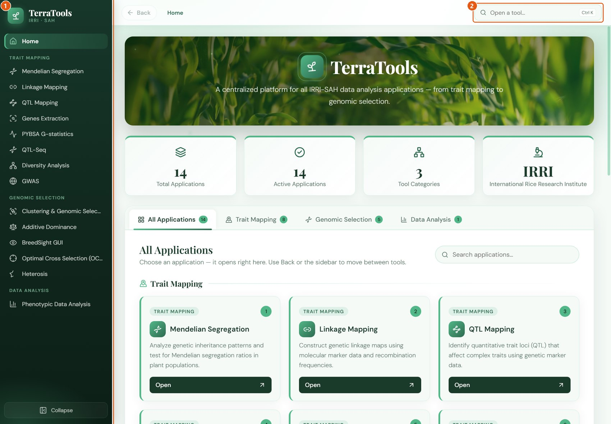
The sidebar on the left lists the tools by group. A green dot beside a tool means a run finished there while you were looking at another page; a spinning dot means it is still running — you can leave a tool while it works and come back later, and a notification appears when it is done.
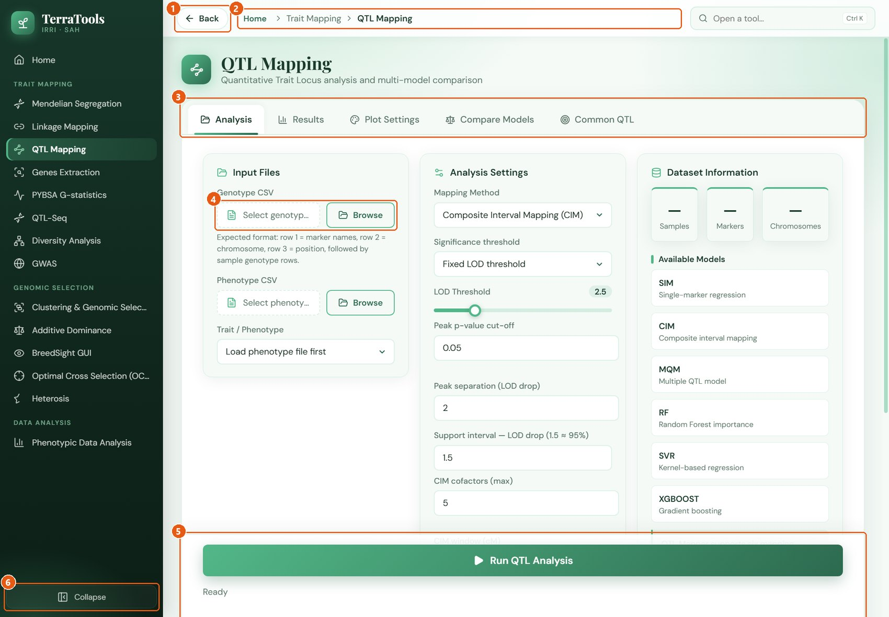
Most problems people meet come from the input files, not from the analyses. These rules apply to every tool.
.xlsx, as stated for each tool. Save from Excel with File → Save As → CSV UTF-8.Line_01, line_01 and Line 01 are three different names. Avoid leading or trailing spaces. Chromosomes must be written the same way everywhere (3 in one file and Chr3 in another will not match).5.25, not 5,25). Do not use thousands separators in positions.| Tool | Genotype coding | Missing values |
|---|---|---|
| Genofile Converter (input) | alleles as sent by the company: HapMap AG, VCF 0/1, raw A:G; the output is coded 0 / 1 / 2 / −1 | NN, ./., -, N:N … (becomes -1) |
| Mendelian Segregation | 0 / 1 / 2 (RIL: 0 and 2) | Codes you list in the settings (default NA, ., -9); add -1 if you use it |
| Linkage Mapping | 0 = parent 1, 1 = heterozygous, 2 = parent 2 | -1 (or blank) |
| Genotype Viewer | A / H / B, or 0|0 / 0|1 / 1|1, or 0/0 / 0/1 / 1/1 (or a VCF) | N, .|. or ./. |
| QTL Mapping | 0 / 1 / 2 (RIL: 0 and 2) | any negative value (-1) or blank; filled automatically from neighbouring markers |
| GWAS | 0 / 1 / 2 dosage or −1 / 0 / 1 centred, as you choose (a file with only 0 and 1 must be told which); VCF: diploid genotype calls | NA or blank, -9, -99, -999; other codes can be listed |
| Clustering & Genomic Selection | 0 / 1 / 2 | -1 |
| Additive Dominance | 0 / 1 / 2 | blank or NA (filled by mean, median or zero) |
| Diversity Analysis | haplotype block numbers (0 is a real code) | -1 or blank |
| BreedSight, Heterosis | numeric marker values (0 / 1 / 2) | none allowed — impute first |
-1 that is read as a real genotype (for example in Mendelian Segregation if you forget to list it) silently changes the result. Check the table above before loading a file.The sample_data folder that comes with this manual holds one small, simulated example for every tool, in exactly the layout the tool expects.
The screenshots in this manual were made with these files. They are quick to run and a good template: open one in Excel, replace the values with your own, and keep the header and the column order.
One chapter per tool: the files it needs, what to click, what the settings mean and how to read the results.
The start of the chain. Genotyping companies deliver alleles — A/G, AG, 0/1 — in HapMap, VCF or spreadsheet files, but the analyses of TerraTools read genotypes coded against the two parents
(0, 1, 2). The Genofile Converter reads the company file, codes every individual against the parents you name, and writes one coded genotype table — the starting point for the other analyses.
One genotype file from the company, in one of three formats; the format is detected from the file.
| Format | What it looks like | Calls |
|---|---|---|
HapMap (.hmp.txt) | Tab-separated, one row per marker: rs#, alleles, chrom, pos, strand … QCcode, then one column per sample. | AA, AG, GG; a single letter is a homozygote (A) or an IUPAC code (R = A/G); NN is missing. |
VCF (.vcf, .vcf.gz) | #CHROM POS ID REF ALT … FORMAT, then one column per sample. The GT field is read. | 0/0, 0/1, 1/1 (or with |); ./. is missing. More than two alleles are handled. |
| Raw allele calls (Excel, CSV) | One row per marker: Marker, Chromosome, the parents P1 and P2, then one column per individual. | A:G, A/G, A|G or AG; - or N is missing. |
| Marker | Chromosome | P1 | P2 | F2_001 | F2_002 | F2_003 | F2_004 | … |
|---|---|---|---|---|---|---|---|---|
| SNP1_01 | 1 | A:A | G:G | A:G | G:G | G:G | A:G | … |
| SNP1_02 | 1 | C:C | T:T | C:T | T:T | T:T | C:T | … |
| SNP1_03 | 1 | A:A | C:C | A:A | C:C | C:C | A:C | … |
| SNP1_04 | 1 | G:G | T:T | G:G | T:T | T:T | G:T | … |
| SNP1_05 | 1 | A:A | G:G | A:A | G:G | G:G | A:G | … |
Example files: sample_data/genofile/genofile_hapmap_example.hmp.txt, sample_data/genofile/genofile_raw_alleles_example.xlsx, sample_data/genofile/genofile_vcf_example.vcf
0 when it has Parent 1's allele twice, 2 for Parent 2's allele twice, 1 with one of each, and -1 when it is missing or carries an allele neither parent has.P1 and P2 are found automatically). Samples that are not part of the population — controls, other lines — can be listed under Samples to leave out. Raw sheet: check the columns found for Marker, Chromosome, P1 and P2 and the allele separator; every other column is an individual.chromosome_position, for example chr01_1044946, which carries the physical position of the marker, read by analyses such as Linkage Mapping), the chromosome labels (Chr01 becomes 1) and whether markers on scaffolds are left out.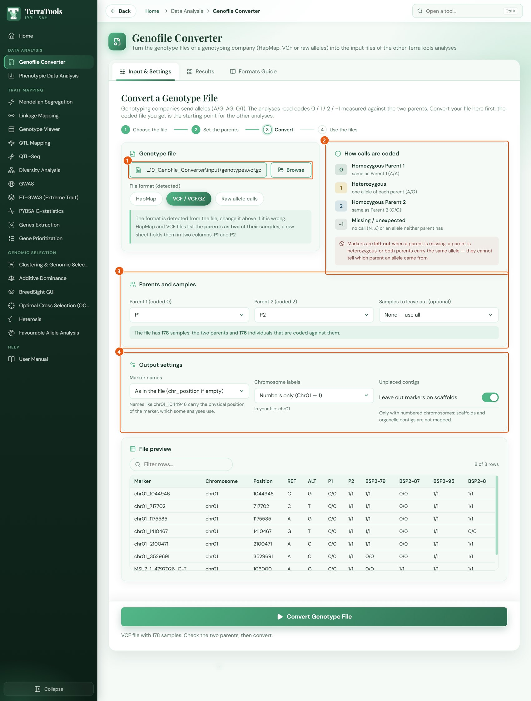
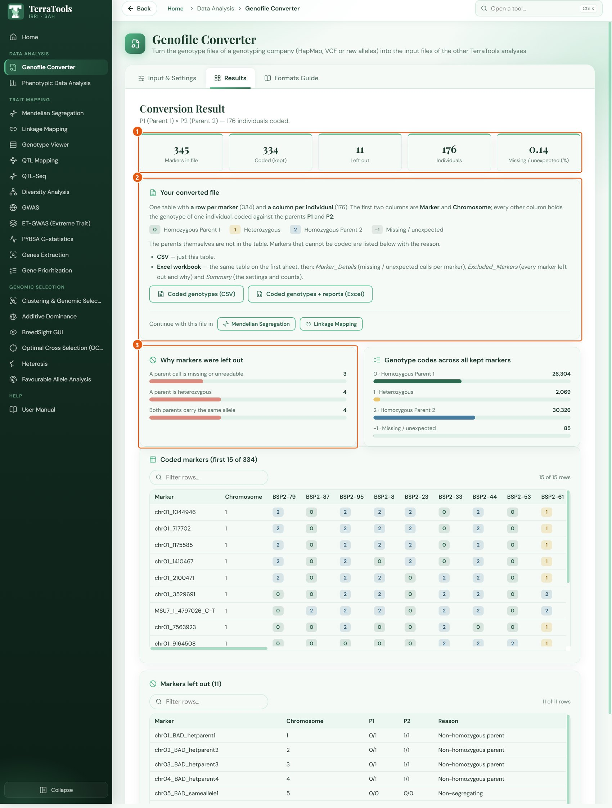
0 (Parent 1 allele), 1 (heterozygous), 2 (Parent 2 allele) or -1 (missing / unexpected). The parents are not in the table. It is offered as a CSV (the table) and as an Excel workbook (the same table on the first sheet, then Marker_Details — the missing and unexpected calls of each marker, Excluded_Markers — every marker left out and why, and Summary — the settings and counts).Analyses multi-environment field trials laid out as an augmented RCBD, an RCBD or an alpha-lattice: descriptive statistics, ANOVA, mixed models with BLUEs, variance components and heritability, correlations, clustering, PCA and genotype-by-environment stability (including AMMI).
A CSV or Excel file with one row per plot. Columns are found by their name, in any order (capital letters and spaces around a name do not matter). There are two kinds of columns.
| Column name | Needed for | What it holds |
|---|---|---|
| Genotype | all designs | Name of the variety or line. Checks and new entries both go here; a genotype that appears more than once in an environment is treated as replicated. |
| Environment | all designs | Location, season or year label. At least two different environments are needed. |
| Rep | all designs | Replicate number. Augmented RCBD: use 1 in every row if the trial is not replicated. RCBD and alpha-lattice: each genotype appears once in every Rep. |
| Block | augmented RCBD, alpha-lattice | Block number. Augmented RCBD: every block holds all the checks and some new entries. Alpha-lattice: the incomplete block, numbered inside its Rep (1, 2, 3 … again in every Rep). An RCBD does not need it. |
| Any other column, for example Yield, PlantHeight, DaysToFlower | — | A trait. Every other numeric column is a trait. Leave a cell empty (or write NA) when a trait was not measured. A 0 is also read as not measured (a note lists where this happened); switch this off with Treat 0 as missing if zeros are real values. |
| Plot, Row, Column, Range, Year, Season, Entry, Line.type, Remarks | — | Layout and label columns. They are not treated as traits. |
multi_environment_trial_example.csv| Genotype | Environment | Rep | Block | Row | Column | Plot | Year | Season | Yield | PlantHeight | DaysToFlower |
|---|---|---|---|---|---|---|---|---|---|---|---|
| Geno01 | Env_2023_Wet | 1 | 1 | 1 | 1 | 101 | 2023 | Wet | 7.07 | 100.7 | 87.8 |
| Geno02 | Env_2023_Wet | 1 | 1 | 1 | 2 | 102 | 2023 | Wet | 5.24 | 100.8 | 84.6 |
| Geno03 | Env_2023_Wet | 1 | 1 | 1 | 3 | 103 | 2023 | Wet | 6.78 | 107.7 | 86.3 |
| Geno04 | Env_2023_Wet | 1 | 1 | 1 | 4 | 104 | 2023 | Wet | 5.5 | 103.5 | 82.4 |
| Geno05 | Env_2023_Wet | 1 | 1 | 1 | 5 | 105 | 2023 | Wet | 6.87 | 100.3 | 85.1 |
The first rows of each design look like this (the Plot, Yield and PlantHeight columns are examples; you can have as many trait columns as you like):
| Design | Genotype | Environment | Rep | Block | Plot | Yield |
|---|---|---|---|---|---|---|
| Augmented RCBD | Check1 | Env1 | 1 | 1 | 101 | 5.4 |
| New07 | Env1 | 1 | 1 | 102 | 6.1 | |
| Check2 | Env1 | 1 | 1 | 103 | 5.3 | |
| New21 | Env1 | 1 | 2 | 201 | 5.8 | |
| RCBD | Geno05 | Env1 | 1 | (none) | 101 | 6.8 |
| Geno03 | Env1 | 1 | (none) | 102 | 7.8 | |
| Geno05 | Env1 | 2 | (none) | 201 | 6.5 | |
| Alpha-lattice | Geno05 | Env1 | 1 | 1 | 101 | 6.8 |
| Geno03 | Env1 | 1 | 1 | 102 | 7.8 | |
| Geno12 | Env1 | 1 | 2 | 105 | 5.9 | |
| Geno05 | Env1 | 2 | 3 | 201 | 6.5 |
Example files: sample_data/phenotypic/alpha_lattice_example.csv, sample_data/phenotypic/augmented_rcbd_example.csv, sample_data/phenotypic/multi_environment_trial_example.csv, sample_data/phenotypic/rcbd_example.csv
Choose the layout of your trial under Experimental Design. It decides which blocking terms the ANOVA, the mixed models (BLUEs) and the heritability use.
| Design | Columns needed | How the file should look | Blocking terms |
|---|---|---|---|
| Augmented RCBD | Genotype, Environment, Rep, Block | Checks repeated in every block, new entries once. Use one Rep (all 1) if the trial has no replicates. | Block, fixed. Rep is used only if every Rep + Block group holds a check |
| RCBD | Genotype, Environment, Rep | Every genotype once in each replicate; the replicate is the block. The Block column is not used. | Rep |
| Alpha-lattice | Genotype, Environment, Rep, Block | Incomplete blocks inside each replicate. Number the blocks inside each Rep (1, 2, 3 … in every Rep); block 1 of Rep 1 and block 1 of Rep 2 are treated as different blocks. | Rep, and Block within Rep |
The example files augmented_rcbd_example.csv, rcbd_example.csv and alpha_lattice_example.csv show the layout of each design; multi_environment_trial_example.csv is a three-replicate trial in which every genotype is in every replicate; analyse it as an RCBD (under the augmented design it falls back to random blocks and says so).
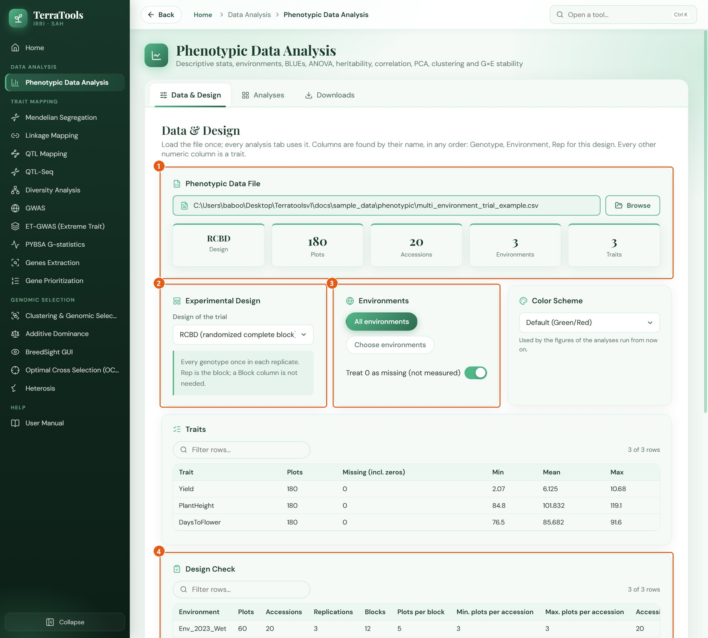
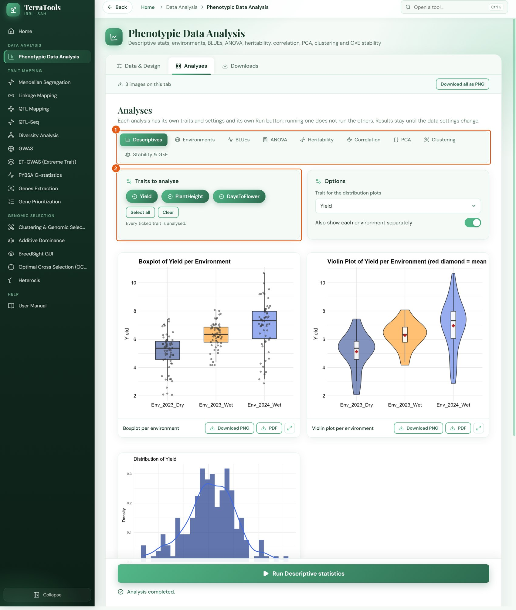
| Analysis tab | What you get |
|---|---|
| Descriptives | Mean, SD, CV, range, quartiles and shape of every trait (all environments, then each), box and violin plots per environment and the distribution of one trait. |
| Environments | Accession means and ranks in every environment, how the ranks change, and the correlation between environments. |
| BLUEs | Adjusted means (BLUEs) of every accession within each environment and over all environments from a mixed model; the standard errors of differences are added to the Design Check. |
| ANOVA | One analysis-of-variance table per trait with every environment and the pooled analysis side by side (DF, SS, MS, F, P, CV), a plot of where the variation comes from, and residual and normal Q-Q plots of one trait. |
| Heritability | Genotypic, G×E, block and error variance components and heritability on a plot and on an entry-mean basis, per trait, environment and pooled. |
| BLUPs | The best linear unbiased prediction (BLUP) of every accession per trait and environment (and across environments), with its standard error, reliability, predicted value and rank, plus the Cullis H² and mean reliability of each model. Download the table as a CSV or the BLUPs workbook. In an augmented design the checks are fixed effects and are not listed (see BLUEs). |
| Correlation, PCA, Clustering | Relationships between traits (Pearson, Spearman or Kendall with P values), a PCA biplot and variance explained, and clusters of accessions (K-means or Ward hierarchical) with their trait means. |
| Stability & G×E | Wricke ecovalence, Finlay-Wilkinson slope, AMMI scores and ASV of every accession, with the stability, G×E and AMMI1 biplots. |
Every figure can be saved as a 300-dpi PNG or as a vector PDF, and every table as a CSV. A message box above the results lists notes, warnings and errors of that analysis (for example when an environment has too little data).
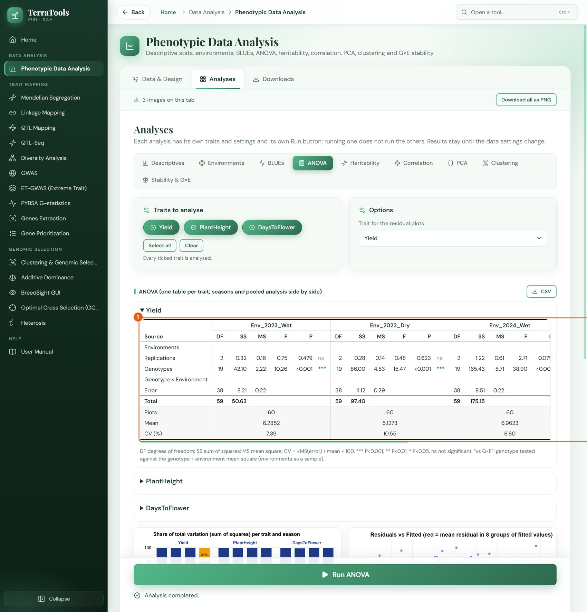
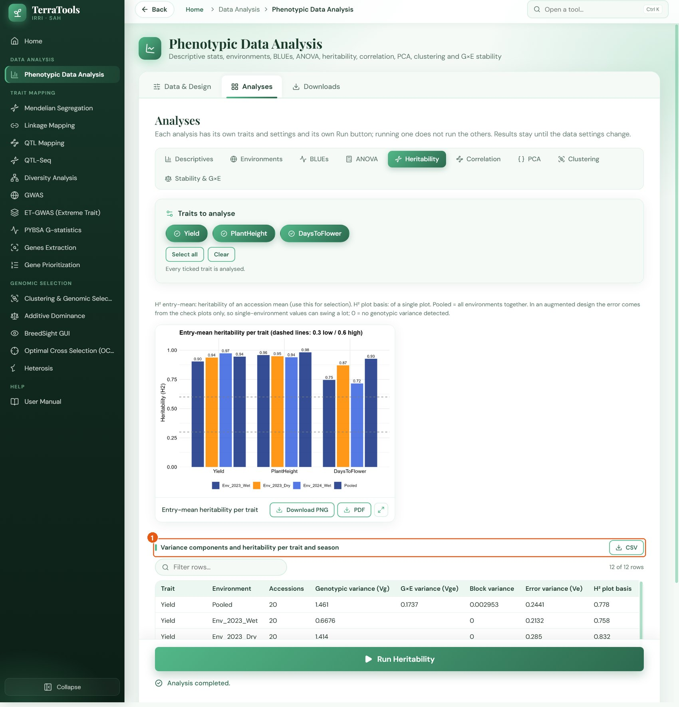
Checks whether each marker segregates in the ratio Mendel predicts, and flags the markers that do not (segregation distortion). Run it before building a linkage map or mapping QTL, so that badly behaved markers can be removed.
One CSV file: a marker per row, the first column the marker name, the second the chromosome, and one column for every individual in the population.
Genotypes as they come from a genotyping company (HapMap, VCF, A:G calls) are converted to this layout by the Genofile Converter (chapter 5), which has a Mendelian Segregation shortcut under Your converted file.
mendelian_RIL_example.csv| Marker | Chromosome | RIL001 | RIL002 | RIL003 | RIL004 | RIL005 | … |
|---|---|---|---|---|---|---|---|
| M1_01 | 1 | 2 | 0 | 0 | 2 | 0 | … |
| M1_02 | 1 | 2 | 0 | 2 | 2 | 2 | … |
| M1_03 | 1 | 2 | 2 | 2 | 0 | 2 | … |
| M1_04 | 1 | 0 | 2 | 0 | 0 | 0 | … |
| M1_05 | 1 | 2 | 2 | 2 | 2 | 2 | … |
0, 1 and 2 (homozygous parent A, heterozygous, homozygous parent B). In a RIL population most calls are 0 or 2.Chromosome and a Position row) is accepted too; it is turned into one row per marker automatically.Example files: sample_data/mendelian/mendelian_RIL_example.csv
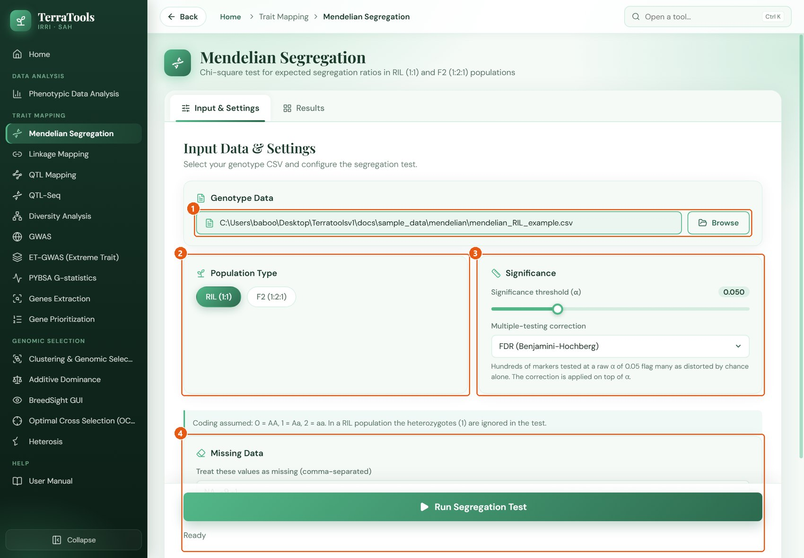
| Population | Classes tested | Expected ratio | Test |
|---|---|---|---|
| RIL, DH | 0 and 2 | 1 : 1 | Exact binomial. Heterozygous calls (1) are not part of the test. |
BC1 to parent 1 (BC1P1) | 0 and 1 | 1 : 1 | Exact binomial. Class 2 cannot occur. |
BC1 to parent 2 (BC1P2) | 1 and 2 | 1 : 1 | Exact binomial. Class 0 cannot occur. |
| F2 | 0, 1, 2 | 1 : 2 : 1 | Exact multinomial. |
| F3 | 0, 1, 2 | 3 : 2 : 3 | Exact multinomial. |
| F4 | 0, 1, 2 | 7 : 2 : 7 | Exact multinomial. |
An F1 is refused: all its plants are heterozygous, so there is no segregation to test. The two backcross directions are separate types because the expected classes differ, and a backcross is never tested as a RIL.
Both tests are exact, so they stay valid when a marker has few calls. The binomial test compares the two classes with 1 : 1. The multinomial test lists every possible outcome for the number of calls and adds up the probability of all outcomes that are no more likely than the one observed; with more than 200 calls the expected counts are large and the χ² approximation is used. A marker is inconclusive when it has no usable call, or so few that even the most extreme outcome could not give a p-value below α (for a two-class marker, fewer than 6 calls at α = 0.05). It is neither called distorted nor passed, and it does not take part in the multiple-testing correction.
| Setting | What it does |
|---|---|
| Population type | Each type has its own model, and a type without one is refused (see the table above). Choosing the wrong type tests the wrong ratio, so set it to the generation you genotyped. |
| Significance threshold (α) | A marker is called distorted when its corrected p-value (p_adj) is below α. |
| Multiple-testing correction | FDR (Benjamini-Hochberg), the default, Bonferroni, or None (raw p). Testing hundreds of markers at a raw α of 0.05 flags many by chance alone, so a correction is recommended. It is applied over the conclusive markers (inconclusive ones are left out), before unplaced markers are dropped. |
| Missing data | Comma-separated codes counted as missing. The default is NA,.,-9,-1. |
| Keep only markers with a known chromosome | Drops markers without a chromosome (unplaced markers) from the results. |
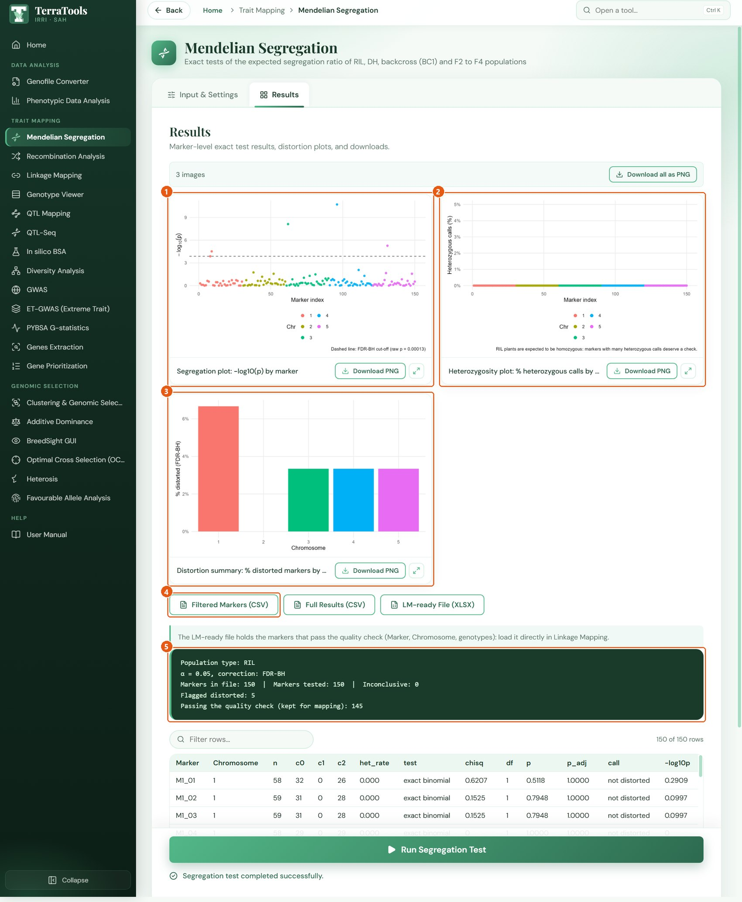
The Results tab draws three plots, each with its own Download PNG button.
c0, c1, c2), n (calls used in the test), n_unexpected, the test used, χ², p, p_adj, call (distorted, not distorted, inconclusive or no data), heterozygosity, −log10 p and the genotype calls.Demo_Input_Files/02_Mendelian_Segregation: 334 markers, 176 rice RILs, type RIL, α = 0.05). All 334 markers are conclusive, and the 2,069 heterozygous calls are not part of the test and are listed in the summary. The correction changes the result a great deal: FDR flags 37 markers as distorted (chromosome 1: 16, chromosome 6: 10, chromosome 3: 7, chromosome 8: 3, chromosome 7: 1) and 297 pass; Bonferroni flags 8 (chromosomes 1, 3 and 6) and 326 pass; None flags 95, mostly by chance. The heterozygosity plot stays at 3 to 9 %, as expected in RILs, and the distortion summary shows the distortion concentrated on chromosomes 1, 3 and 6.Demo_Input_Files/02_Mendelian_Segregation/input/coded_genotypes_RIL_4k_simulated.csv: 4,499 markers, 150 simulated RILs on 12 chromosomes, about 4 % missing and 1 % heterozygous). Type RIL, FDR: 156 markers are distorted and 4,343 pass. Most of the genome sits near zero in the segregation plot, and three regions rise above the cut-off, on chromosomes 3 (about 21 to 29 Mb), 9 and 6; the distortion summary shows the same three chromosomes. This is what a normal RIL gives: a few localised regions, not a scatter of markers. Bonferroni keeps only the strongest region (27 markers on chromosome 3), and None flags 571 markers on nine chromosomes.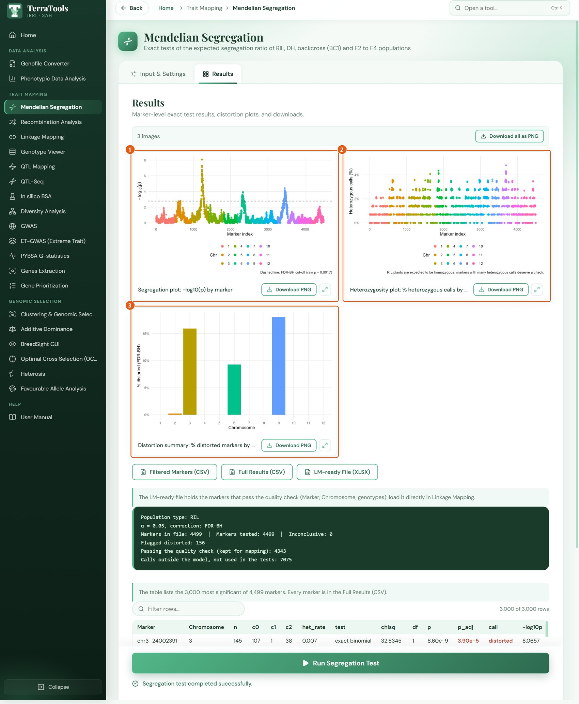
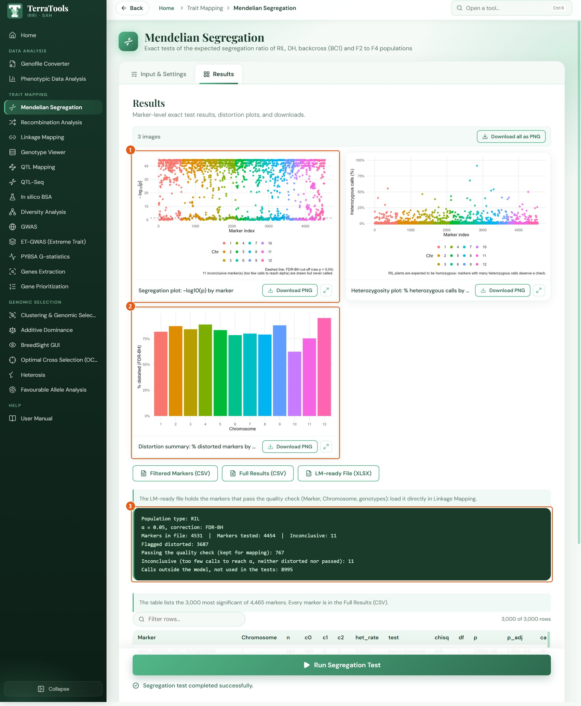
Recombination Analysis answers three questions about a mapping population of RILs or backcross-derived lines: where did the crossovers happen, how much of the donor genome does each line carry, and where along the chromosomes is recombination frequent or rare. It replaces the set of R scripts that were run one after the other (crossover detection, rate along the genome, circos plot, intragenic crossovers) with one tool.
One table with a row per marker, giving the chromosome, the position in base pairs and the genotype of every line, coded 0 / 1 / 2 with −1 for missing. Two kinds of file are read:
CHROM, POS, ID, optional REF, ALT …, then one column per sample (IRRI-370_GT, RIL-001_GT …). The parent's allele is called A, the other homozygous allele B (the donor).Marker, Chromosome, then the individuals): there is no parent column, 0 is the allele of Parent 1 (A) and 2 the allele of Parent 2 (B). The position is read from the marker name (chr01_1044946). The Genofile Converter has a button that opens its result here.| CHROM | POS | ID | REF | ALT | IRRI-PARENT_GT | RIL-001_GT | RIL-002_GT | RIL-003_GT | … |
|---|---|---|---|---|---|---|---|---|---|
| 1 | 355344 | chr1_355344_LOC_Os01g00010 | A | G | 0 | 0 | 2 | 0 | … |
| 1 | 361113 | chr1_361113_LOC_Os01g00010 | A | G | 0 | 0 | 2 | 0 | … |
| 1 | 415440 | chr1_415440_LOC_Os01g00020 | A | G | 0 | -1 | 2 | 0 | … |
| 1 | 419036 | chr1_419036_LOC_Os01g00020 | A | G | 0 | 0 | 2 | 1 | … |
| 1 | 431755 | chr1_431755_LOC_Os01g00030 | A | G | 0 | 0 | 2 | 0 | … |
Example files: sample_data/recombination/mapping_population_example.csv
chr1_134521_LOC_Os01g01280) the crossovers are also split into intragenic (both flanking markers lie in the same gene) and intergenic, and the genes with the most intragenic crossovers are listed with their names.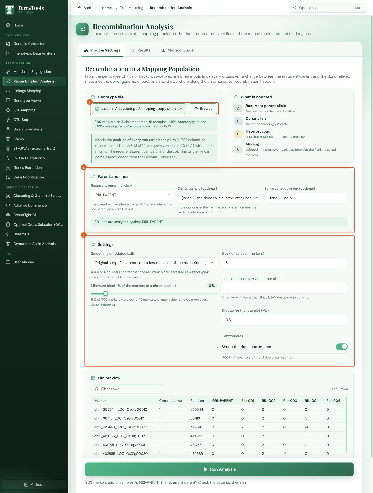
A genotyping error inside a block of the other parent's allele would look like two crossovers. TerraTools therefore overwrites every run of A or B calls shorter than a minimum block, given as a percentage of the markers of the chromosome (at least 3 markers). Three methods are offered:
| Method | What it does |
|---|---|
| Original script | The first run shorter than the minimum takes the value of the run before it (the first run takes the value of the next one); repeated up to 50 times. Reproduces the results of the earlier R scripts exactly. |
| Shortest run first | The shortest run is merged into its longer neighbour, again and again, until every run has the minimum length. No limit on the number of passes. |
| None | Every isolated call counts as two crossovers. Useful only to see how much noise there is. |
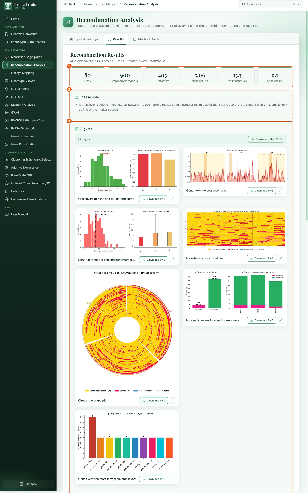
Builds a genetic linkage map the way JoinMap and Lep-MAP3 do: it checks which markers belong together (LOD), finds the marker order that the genotypes support, and estimates all distances together (multipoint maximum likelihood) in centiMorgans. It writes a file that QTL Mapping can read directly. Genotypes from a genotyping company are converted to the 0 / 1 / 2 codes first, by the Genofile Converter (chapter 5).
An Excel file (.xlsx) with one row per marker: Marker, Chromosome, then one column per individual, coded 0 (homozygous for parent 1),
1 (heterozygous), 2 (homozygous for parent 2) or -1 (missing).
linkage_F2_coded_example.xlsx| Marker | Chromosome | F2_001 | F2_002 | F2_003 | F2_004 | F2_005 | … |
|---|---|---|---|---|---|---|---|
| SNP1_01 | 1 | 1 | 2 | 2 | 1 | 0 | … |
| SNP1_02 | 1 | 1 | 2 | 2 | 1 | 0 | … |
| SNP1_03 | 1 | 0 | 2 | 2 | 1 | 0 | … |
| SNP1_04 | 1 | 0 | 2 | 2 | 1 | -1 | … |
| SNP1_05 | 1 | 0 | 2 | 2 | 1 | 0 | … |
chr02_16919033) that order is kept unless the genotypes favour another order by more than 3 LOD; markers without a position in their name are placed where they fit best. Markers on chromosome 0 (unplaced) are left out.A:G calls) are not read by this tool. Convert them with the Genofile Converter (chapter 5) first: its Linkage Mapping shortcut under Your converted file loads the converted workbook straight into the Upload tab. If the marker names carry the physical position (chr02_16919033), choose Marker names: chromosome_position there.Example files: sample_data/linkage/linkage_F2_coded_example.xlsx
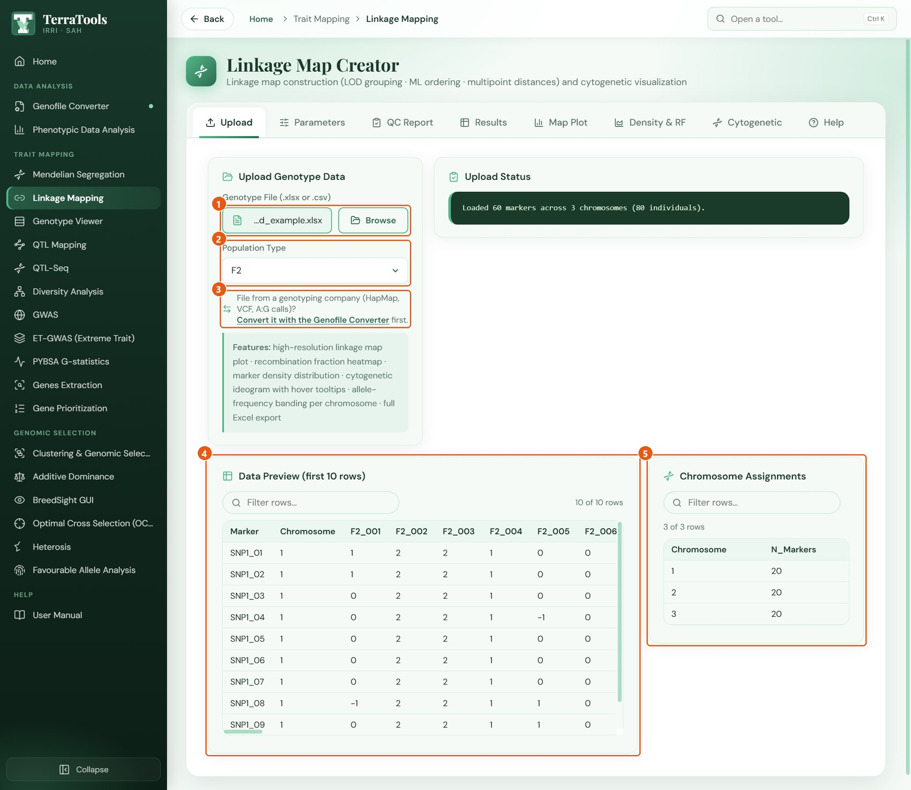
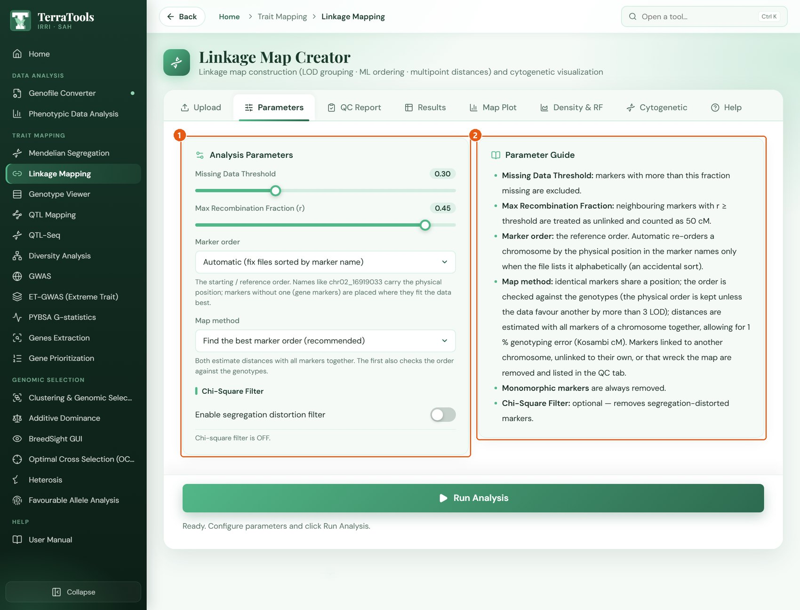
| Parameter | What it does | Typical value |
|---|---|---|
| Missing data threshold | Markers with a larger share of missing calls are removed. | 0.30 |
| Max recombination fraction (r) | Neighbouring markers with r at or above this value are not considered linked and get a 50 cM gap (the QC report warns when this happens). | 0.45 |
| Marker order | The starting / reference order: automatic (re-sorts a chromosome by the physical position in the marker names only if the file lists it alphabetically), by physical position, or as in the file. | automatic |
| Map method | Find the best marker order (recommended) or keep my marker order. Both estimate Kosambi distances with all markers of a chromosome together and allow for 1 % genotyping error, so a single wrong call does not inflate the map. Markers linked more strongly to another chromosome, not linked to their own, or that add more than 10 cM to the map are removed and listed in the Removal Log. | find best order |
chr02_16919033), the length of each linkage group in cM is set against its physical span, which gives kb per cM (the genome-wide value is shown at the top). A group whose cM order disagrees with the genome is flagged as partly out of order, and its rate is not reliable. The rate is also in the Physical Summary sheet of the Excel results.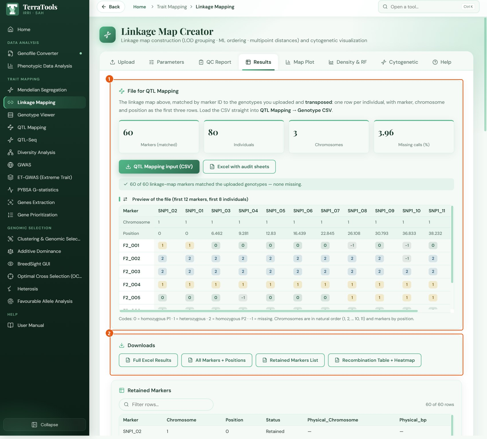
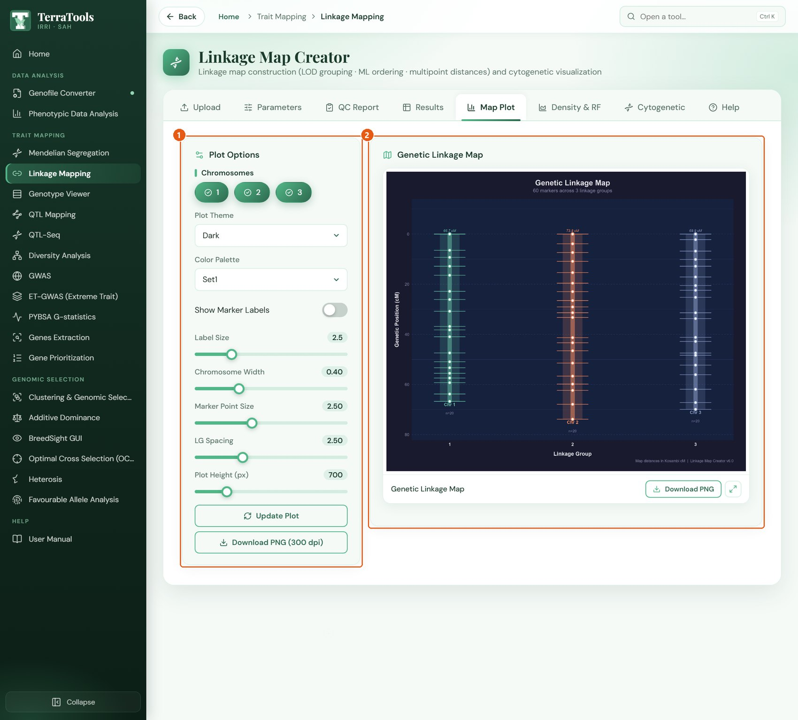
The page is called Graphical Genotype Visualisation and is used for parent recovery: every chromosome of a line is drawn as a bar, coloured along its length by the genotype of the markers, so that you can see which parent each stretch of chromosome came from and how much of the recurrent parent a line has recovered. It is built on GenoSee (Hashimoto 2024), with a choice of colour palettes, parent names in the legend, rounded and shaded chromosomes, and PNG or vector-PDF images that are ready for a paper.
One genotype file, as CSV (or tab- / semicolon-separated text) or as a VCF (.vcf or .vcf.gz), with one row per marker:
| chr | marker_name | pos | Parent1 | Parent2 | RIL01 | RIL02 | RIL03 | … |
|---|---|---|---|---|---|---|---|---|
| chr01 | chr01_1735605 | 1735605 | A | B | A | A | A | … |
| chr01 | chr01_4801799 | 4801799 | A | B | B | A | A | … |
| chr01 | chr01_7101064 | 7101064 | A | B | B | A | A | … |
| chr01 | chr01_9414760 | 9414760 | A | B | B | H | A | … |
| chr01 | chr01_15979926 | 15979926 | A | B | B | A | A | … |
1, chr1 and chr01 all mean the same chromosome). Markers on chromosomes that the species does not have are not drawn, and the Results tab says how many were left out.| Style | Calls | Missing |
|---|---|---|
| Simple | A (parent 1), B (parent 2), H (heterozygous) | N |
| Phased | 0|0, 0|1, 1|0, 1|1 | .|. |
| Non-phased | 0/0, 0/1, 1/1 | ./. |
0/2) and polyploid calls (0/0/0/1) cannot be drawn. Remove them first, for example with bcftools view --max-alleles 2.A VCF is converted with GenoSee's own converter: each sample's GT field becomes the call. The option Name the markers CHROM_POS names the markers
chr01_1735605; untick it to use the ID column of the VCF instead.
Example files: sample_data/genotype_viewer/rice_RILs_example.vcf, sample_data/genotype_viewer/rice_RILs_simple_example.csv
The chromosome lengths come from GenoSee's table of species: rice (Oryza sativa), Arabidopsis thaliana, wheat, sorghum, tomato, maize, barley and soybean.
For another species or genome version, use Add a species: choose its genome FASTA file (.fa, .fasta, also .gz) and type a name; the chromosome lengths are read from the file and kept for the next time.
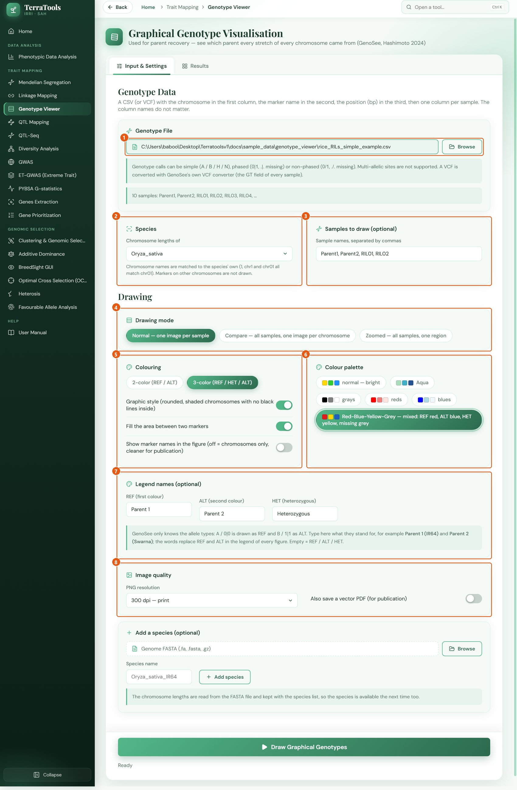
| Setting | What it does |
|---|---|
| Drawing mode — Normal | One image per sample, with all chromosomes side by side. A file of 200 samples gives 200 images: name the samples you need. |
| Drawing mode — Compare | One image per chromosome, with all samples side by side, to compare them along that chromosome. |
| Drawing mode — Zoomed | One region of one chromosome for all samples. Give the chromosome (for example chr01) and the start and end in bp; the end cannot be beyond the chromosome. |
| Colouring | 2-color: REF and ALT (heterozygous calls are drawn in the colour of the nearer allele call). 3-color: REF, HET and ALT. |
| Graphic style | On (default): rounded, softly shaded chromosomes with a thin outline and a light shadow, no black lines inside them, a pale grid and bold labels. Off: the plain GenoSee drawing. |
| Fill the area between two markers | On: the stretch between two markers is coloured (the usual graphical genotype). Off: only the markers are drawn. |
| Show marker names in the figure | Off by default (chromosomes only, cleaner for a paper). On: the marker names are written beside the chromosomes. |
| Dashed line from each marker name | Only with marker names in the Compare and Zoomed modes: the dashed line that runs from each name across all samples. Switch it off to keep the names only. |
| Colour palette | See the next table. |
| Legend names | The words that replace REF, ALT and HET in the legend. Empty boxes keep GenoSee's words. |
| PNG resolution | 200 dpi (screen), 300 dpi (print) or 600 dpi (publication). |
| Also save a vector PDF | Writes a vector PDF next to every PNG; each result has a download button for it. |
| Palette | Colours (REF / HET / ALT) | Use |
|---|---|---|
| normal — bright | yellow / green / blue (missing: grey) | GenoSee's default, bright and easy to tell apart. |
| Aqua | pale green / blue / dark blue | A calm blue-green series. |
| grays | black / grey / white | For black-and-white printing. |
| reds | red / light red / pale | One-colour series. |
| blues | blue / light blue / pale | One-colour series. |
| Red-Blue-Yellow-Grey | red / yellow / blue (missing: grey) | A mixed palette in which the two parents and the heterozygotes stand out clearly. |
The first five palettes are GenoSee's own; the sixth is added by TerraTools in the same format.
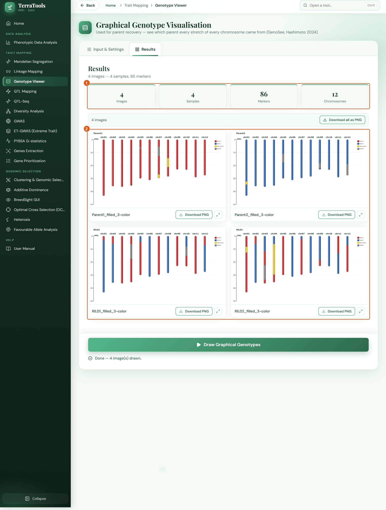
A / 0|0 is REF (the first colour) and B / 1|1 is ALT (the second colour). Code the file so that REF is parent 1 and ALT is parent 2, and put the parents into the legend with Legend names. Adding the parents as sample columns is a good check: their bars are one colour all along.Finds quantitative trait loci. Each QTL is reported as a region: a left flanking marker, a peak marker and a right flanking marker, with the LOD, p-value and effect at the peak — following the usual interval-mapping practice (Lander & Botstein, Haley & Knott, Zeng, Churchill & Doerge, Broman & Sen).
1. Genotype CSV — three header rows, then one row per individual. Row 1 holds the marker names, row 2 the chromosome of each marker and row 3 its position in cM. (The linkage-mapping tool writes exactly this file for you.)
| Marker | c1m01 | c1m02 | c1m03 | c1m04 | c1m05 | c1m06 | … |
|---|---|---|---|---|---|---|---|
| Chromosome | 1 | 1 | 1 | 1 | 1 | 1 | … |
| Position | 0 | 5 | 10 | 15 | 20 | 25 | … |
| L001 | 1 | 1 | 1 | 1 | 1 | 1 | … |
| L002 | 1 | 1 | 1 | 1 | 1 | 1 | … |
| L003 | 0 | 1 | 1 | 1 | 1 | 1 | … |
| L004 | 1 | 1 | 1 | 1 | 1 | 1 | … |
2. Phenotype CSV — one row per individual: the first column is the ID (the same IDs as in the genotype file), then one column per trait.
qtl_phenotypes_example.csv| ID | Yield | Height |
|---|---|---|
| L001 | 0.152 | 107.15 |
| L002 | 1.116 | 93.86 |
| L003 | 2.092 | 96.62 |
| L004 | 1.158 | 112.43 |
| L005 | 1.509 | 90.37 |
0, 1, 2 (RIL: 0 and 2); negative values and blanks are missing, and are filled in from the neighbouring markers.Example files: sample_data/qtl/qtl_genotypes_example.csv, sample_data/qtl/qtl_phenotypes_example.csv
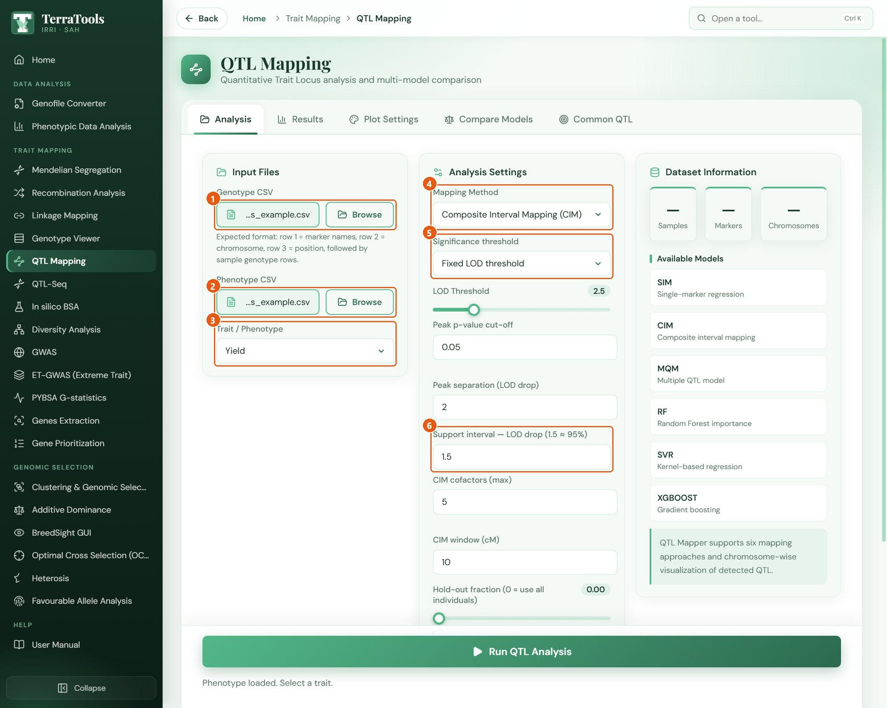
| Setting | What it does |
|---|---|
| Mapping method | SIM — one marker at a time. CIM — adds a few background markers (cofactors) to remove the effect of other QTL; the usual first choice. MQM — a larger background model. RF, SVR, XGBoost — machine-learning importance scores, tested by permutation (see below); they are not LODs and are best used to rank candidate regions. |
| Significance threshold | Fixed LOD (default 2.5), or a genome-wide permutation test (SIM / CIM / MQM): the phenotype is shuffled many times and the 95th percentile of the genome-wide maximum LOD becomes the threshold. For CIM and MQM every permutation repeats the whole method (the background cofactors are selected again and the composite scan is run again; Doerge & Churchill 1996), so it takes longer than for SIM (about 0.15 s per permutation for 250 lines and 4,000 markers). Permutation is the safer choice for publications. The machine-learning methods have no fixed-LOD option: they are always tested by permutation (next row). |
| Permutations (RF / SVR / XGBoost) | The importance of a marker has no scale of its own: the largest importance of a genome is large whether or not there is a QTL. The tool therefore shuffles the trait, fits the same model again and keeps the largest marker importance of the genome; the 95th percentile of these maxima (set the level with Genome-wide α) is the threshold (default 100 permutations). The score in the LOD column is importance / threshold: a QTL needs a score of at least 1 (it is not a LOD), the P_Value is the genome-wide permutation P, and the Importance column holds the raw value (RF: increase in prediction error when the marker is shuffled; SVR: relative rise of the training error, mean of 3 shuffles; XGBoost: share of the total gain). Every permutation is a complete model fit, so the number of permutations is lowered automatically (never below 20) if the run would take more than about 20 minutes. SVR uses every marker, so the importance of unrelated markers rises with the strength of a real signal; its null is therefore scaled by an inflation factor (median importance of the real fit divided by that of the shuffled fits, never below 1, the idea of the genomic inflation factor of a GWAS). In simulations without any QTL none of 12 runs per method reported a QTL (about 1 in 20 is expected at α = 0.05); earlier versions reported 26 to 31 regions in every such run. On the demo data RF, SVR and XGBoost find the planted QTL on chromosomes 1 and 5 and nothing in the no-QTL trait. Peaks closer than the CIM window (10 cM) count as one QTL. These methods are less powerful than CIM, so a weak QTL that CIM finds can be missed. |
| Peak p-value cut-off | A peak must also have a nominal p-value below this (default 0.05). |
| Peak separation (LOD drop) | Two peaks on one chromosome count as separate QTL only if the LOD curve dips by at least this much between them (default 2). |
| Support interval — LOD drop | The QTL region extends left and right of the peak until the LOD has fallen by this amount; 1.5 gives roughly a 95 % interval (default 1.5). The first marker outside on each side is the flanking marker. |
| CIM cofactors / window | Maximum number of background markers and the distance (cM) around the tested position in which cofactors are ignored. |
| Hold-out fraction | Fraction of individuals set aside before mapping (default 0 = use everyone). The set-aside lines are then used to test the result and the Results tab reports the prediction R², the RMSE and the correlation on them: for RF / SVR / XGBoost the fitted model predicts them, for SIM / CIM / MQM a regression on the peak markers of the QTL found does. R² is 1 minus the squared prediction error divided by the squared deviation from the training mean, so it is negative when the model predicts worse than the mean. Random Forest also gives its out-of-bag R², which needs no hold-out. |
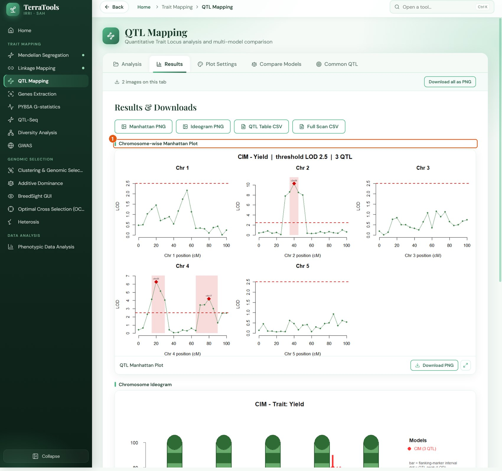
The Results tab has three parts. The buttons at the top download the Manhattan PNG, the Ideogram PNG, the QTL Table CSV and the Full Scan CSV (the LOD and the p-value of every marker).
The Plot Settings tab sets the look of the two figures. The settings apply the next time you run an analysis or a comparison, so change them before you click Run QTL Analysis, and click Save Plot Settings when you are done.
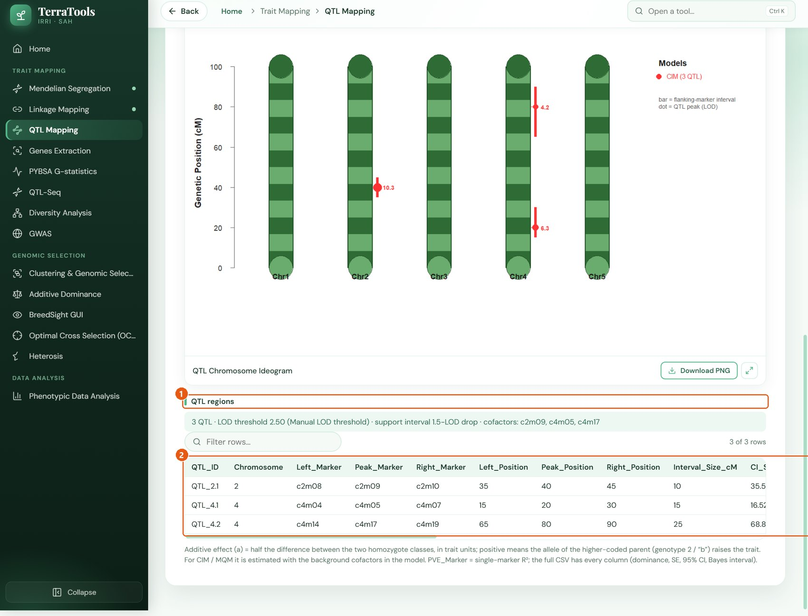
| Column | Meaning |
|---|---|
| QTL_ID | Name of the QTL (chromosome and order along it). |
| Left_Marker, Peak_Marker, Right_Marker | The flanking markers and the marker with the highest LOD. The QTL lies between the flanking markers. |
| Interval_Size_cM, CI_Start/End | Width of the region in cM, and the interpolated positions where the LOD curve crosses the support-interval level. |
| LOD, P_Value, Genomewide_P | Strength of the evidence at the peak. Genomewide_P appears when the permutation threshold is used. |
| PVE_Marker_Percent | Percent of the trait variance explained by the peak marker. |
| Additive_Effect, SE_Additive | Half the difference between the two homozygous classes, in trait units. Positive means the higher-coded allele (genotype 2) raises the trait. For CIM / MQM it is estimated with the background markers in the model. |
| Dominance_Effect, Dominance_Class | Departure of the heterozygote from the mid-point (F2 only) and a label: additive, partial dominance, dominance, overdominance. |
The Compare Models tab runs several methods on the same data, with the trait, threshold and settings of the Analysis tab (SIM, CIM and MQM are ticked at first; tick others to add them), and lines their QTL regions up; two methods found “the same QTL” when their regions overlap. It gives three things:
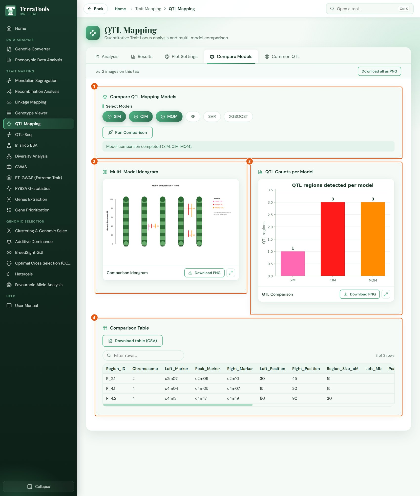
chr02_16919033) the region is also given in Mb, and Order_Check says whether the map follows the physical order, runs against it or differs from it between the three markers.The Common QTL tab then keeps the regions that at least n methods agree on (set Minimum Models Detecting QTL, 2 to 6, and click Find Common QTL). It shows an ideogram in the same design as the comparison (banded chromosomes, a bar between the flanking markers, a dot at the peak) with one lane and one colour for each “found by n models” level, labelled ×n, a bar chart of how many methods found each, and a table that can be downloaded as CSV.
Bulk segregant analysis from sequencing data. Two bulks of plants, one with a high and one with a low trait value, are sequenced. For every SNP the SNP-index of a bulk is the share of its reads that carry the index allele; the Δ SNP-index is the high bulk minus the low bulk, so it lies between −1 and 1. A QTL shows as a stretch of the genome where the sliding mean of Δ rises above (or falls below) what chance alone would give.
AD (allele depth) field. The genotype (GT) of a pooled bulk is never used as if it were a diploid genotype: only the read counts count. A single VCF that holds both bulks can be entered twice, with the two sample columns named under Advanced settings.Also give the population type (F2, RIL or backcross) and the number of plants in each bulk: they set the spread of the Δ SNP-index expected by chance, which the confidence limits are built from.
GT:AD values. The AD part (reference reads, alternate reads) is what counts. In this file the HighBulk and LowBulk columns are used.| #CHROM | POS | ID | REF | ALT | QUAL | FILTER | INFO | FORMAT | Cultivar | HighBulk | … |
|---|---|---|---|---|---|---|---|---|---|---|---|
| Chr1 | 12332 | . | A | G | 50 | PASS | . | GT:AD | ./.:29,0 | ./.:16,16 | … |
| Chr1 | 13160 | . | A | G | 50 | PASS | . | GT:AD | ./.:26,0 | ./.:21,20 | … |
| Chr1 | 15256 | . | A | G | 50 | PASS | . | GT:AD | ./.:34,1 | ./.:12,20 | … |
| Chr1 | 18113 | . | A | G | 50 | PASS | . | GT:AD | ./.:33,0 | ./.:13,15 | … |
Example files: sample_data/qtl_seq/qtlseq_example.vcf.gz
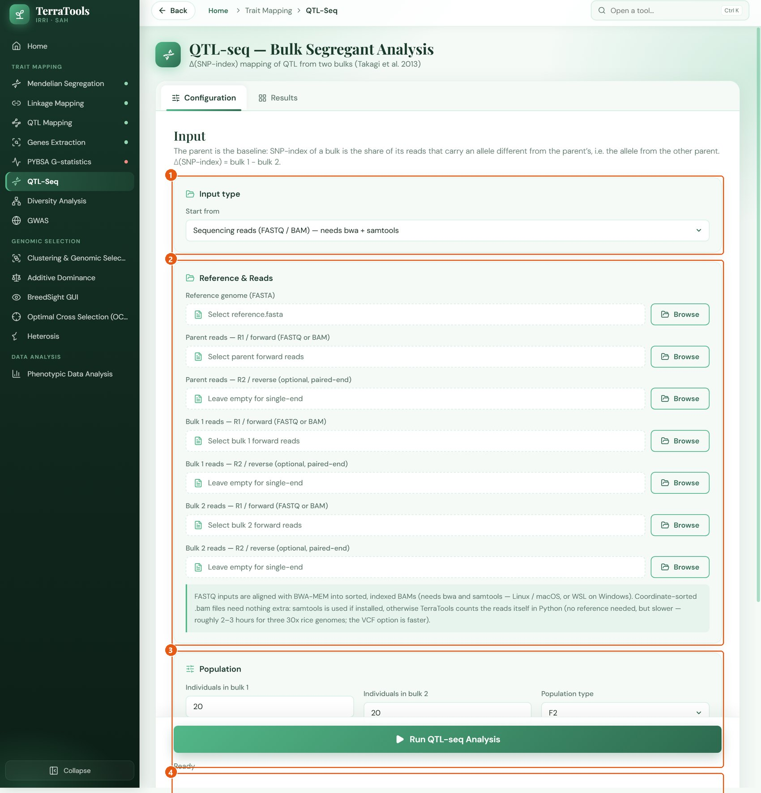
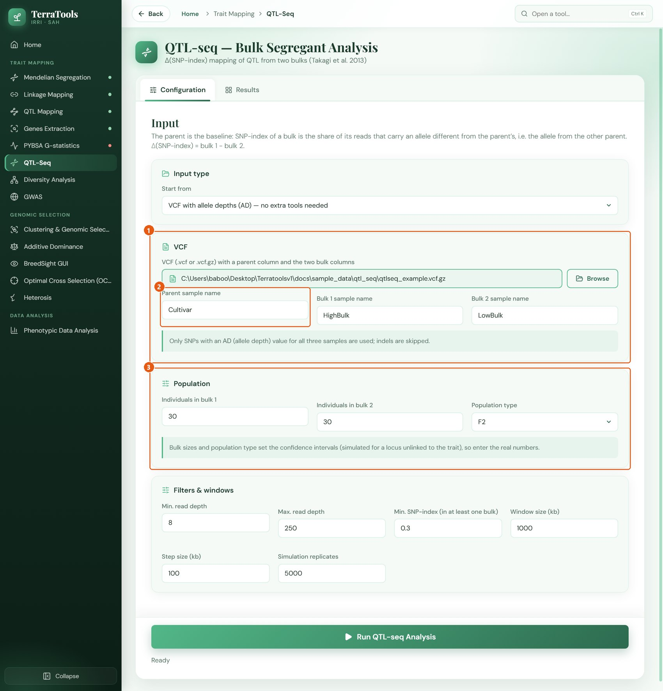
| Setting | What it does | Default |
|---|---|---|
| Minimum read depth | SNPs covered by fewer reads in either bulk are removed. | 7 |
| Minimum SNP-index | At least one bulk must reach this value; removes sequencing errors and sites that do not segregate. | 0.3 |
| Window size / step | The Δ SNP-index is averaged over windows that slide along each chromosome. | 2 Mb / 10 kb |
| Minimum SNPs per window | Windows with fewer SNPs are left out. | 10 |
| Simulation replicates | Random bulks drawn for every read-depth pair to form the confidence limits. | 10,000 |
| Random seed | The same seed and settings always give the same limits. | 12345 |
| Limits of a window | Average of the limits of its SNPs, or a simulation of the whole window. | Average of its SNPs |
| Call a QTL at | The lowest limit (90, 95 or 99 %) a window must pass; adjacent significant windows are merged. | 90 % |
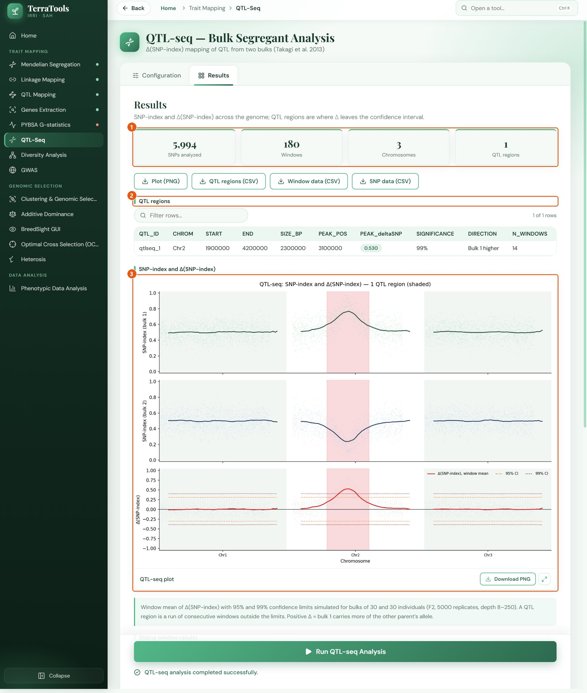
QTLseq_results that also holds the parameters (JSON) and the log..tbi) and its records and Ts/Tv ratio are checked; the page shows which programs were found. The window limits are not corrected for the number of windows tested, so a few additional short intervals can appear by chance; the 99 % level and the SNP count of an interval help to judge them.In silico BSA is bulked segregant analysis without any pooled sequencing. You already have the genotype of every line of a mapping population and its trait value, so TerraTools sorts the lines by the trait, takes the lowest and the highest fraction as the low and the high pool, and compares the genotypes of the two pools at every marker. It uses the Gw statistic of dQTG-seq (Li et al. 2022), which counts alleles and genotypes. Because it also looks at the heterozygotes, it finds over-dominant loci that allele-frequency methods (G′, ED, Δ SNP-index) cannot see.
A genotype file and a phenotype file. Both are CSV or Excel files.
CHROM and a POS column (the position in base pairs), optionally an ID or Marker name, then one column per line, coded 0 / 1 / 2 with −1 for missing: 0 and 2 are the two parents and 1 is heterozygous. The positions are read from POS, never from the marker name; only when there is no POS column are names such as chr1_134521 used for the position. The coded files of the Genofile Converter work.| CHROM | POS | ID | F2-001 | F2-002 | F2-003 | F2-004 | F2-005 | … |
|---|---|---|---|---|---|---|---|---|
| 1 | 100000 | chr1_100000 | 1 | 1 | 1 | 1 | -1 | … |
| 1 | 166221 | chr1_166221 | 1 | 1 | 1 | 2 | 0 | … |
| 1 | 232441 | chr1_232441 | 1 | 1 | 1 | 1 | 0 | … |
| 1 | 298662 | chr1_298662 | 1 | 1 | 1 | 1 | -1 | … |
| Sample | PlantHeight |
|---|---|
| F2-001 | 112.75 |
| F2-002 | 99.1 |
| F2-003 | 95.4 |
| F2-004 | 91.8 |
Example files: sample_data/insilico_bsa/insilico_genotypes_example.csv, sample_data/insilico_bsa/insilico_phenotypes_example.csv
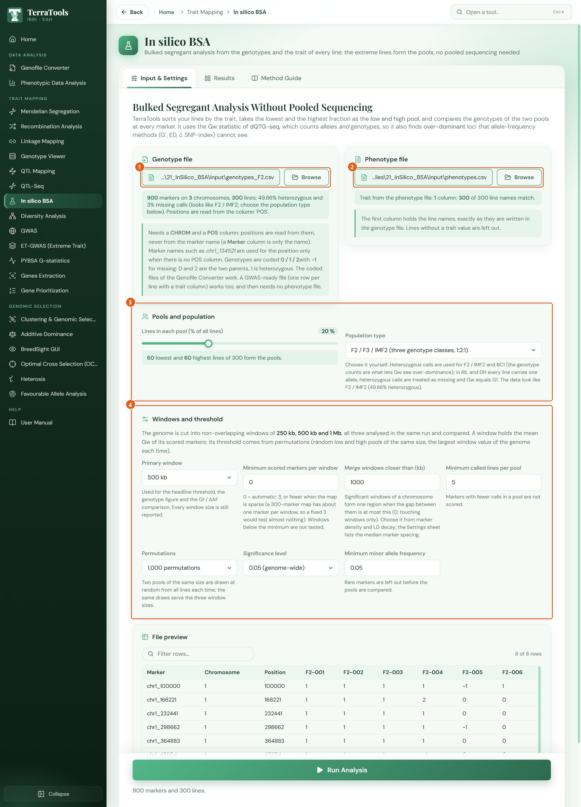
The type decides how heterozygous calls are used, and the page checks the heterozygosity of the data against it.
| Population | Heterozygous calls | Statistic |
|---|---|---|
| F2 / F3 / IMF2 (1 : 2 : 1) | Used. Three genotype classes. | Gw (alleles and genotypes) |
| BC1 (1 : 1) | Used. Two genotype classes. | Gw |
| RIL, DH | Treated as missing: every line carries one allele. | Gw equals G1 (alleles only), so the tool cannot find an over-dominant locus in these populations. |
| Setting | Default | What it does |
|---|---|---|
| Lines in each pool | 20 % | The lowest and the highest fraction of the lines by trait value (5 to 50 %). A larger pool is more stable but dilutes the contrast. |
| Primary window | 500 kb | The window size used for the headline threshold, the genotype figure and the comparison with G1 and ΔAF. All three sizes (250 kb, 500 kb, 1 Mb) are analysed and reported in every run. |
| Minimum scored markers per window | 0 = automatic | Automatic is 3, or fewer on a sparse map (a 300-marker map has about one marker per window, so a fixed 3 would test almost nothing). Windows below the minimum are not tested. |
| Merge windows closer than | 1000 kb | Significant windows of a chromosome form one region when the gap between them is at most this. Choose it from the marker density and the decay of linkage disequilibrium; the Settings sheet lists the median marker spacing. |
| Minimum called lines per pool | 5 | A marker with fewer calls in a pool is not scored. |
| Minimum minor allele frequency | 0.05 | Rare markers are left out before the pools are compared. |
| Permutations | 1,000 | 200 to 5,000. More permutations give a smoother threshold and finer adjusted p-values. |
| Significance level | 0.05 | 0.10 (a looser level, suggested by Li et al. for small samples), 0.05 (genome-wide) or 0.01 (stringent). |
| SNP-index shows the allele of | Parent 2 | The SNP-index of a pool is the frequency of this parent's allele in it (genotype 2 for parent 2, genotype 0 for parent 1). As in QTL-seq, choose the parent whose allele you want to follow, for example the donor. The other choice flips the sign of every ΔSNP-index. |
Besides Gw, the tool draws the same picture as QTL-seq, so you can see at once which pool carries which allele.
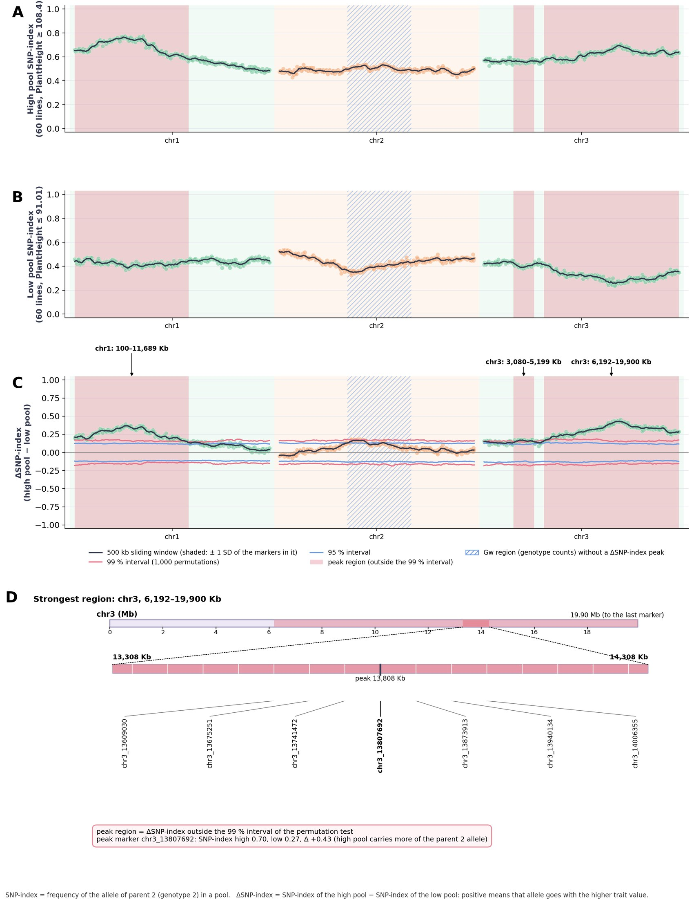
The figure has four panels. A is the SNP-index of the high pool and B that of the low pool (the number of lines and the trait limits are in the axis label), C is the ΔSNP-index with the 95 % (blue) and 99 % (red) intervals, and D enlarges the strongest region: the chromosome, the region in red, a zoom of one window on each side of the peak, and the names of the markers around the peak. Red bands mark the peak regions in A to C; a blue hatched band marks a Gw region without a ΔSNP-index peak, which is what an over-dominant locus looks like: the allele frequencies of the two pools are alike, only the genotype counts differ.
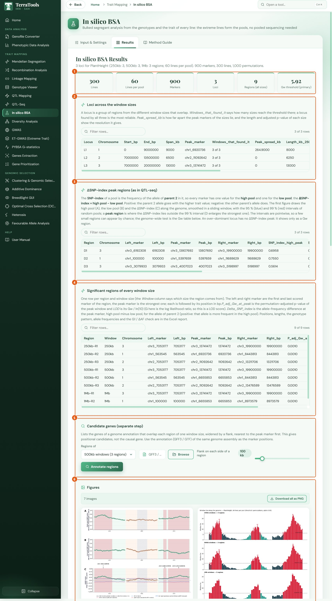
Li P, Li G, Zhang Y-W, Zuo J-F, Liu J-Y, Zhang Y-M (2022). A combinatorial strategy to identify various types of QTLs for quantitative traits using extreme phenotype individuals in an F2 population. Plant Communications 3:100319. Magwene PM, Willis JH, Kelly JK (2011). The statistics of bulk segregant analysis using next generation sequencing. PLoS Computational Biology 7:e1002255.
Measures haplotype diversity of each variety and sample, groups them, and draws the relationships: block statistics, a metrics heat map, comparisons between varieties, PCA with clusters and a neighbour-joining tree.
A CSV with one row per sample: column 1 the variety (cultivar group), column 2 the sample ID, and from column 3 the haplotype block codes — one numeric code per block per sample.
haplotype_blocks_example.csv| Variety | Sample | Block01 | Block02 | Block03 | Block04 | Block05 | Block06 | … |
|---|---|---|---|---|---|---|---|---|
| Aus | AUS_01 | 2 | -1 | 2 | 3 | 2 | 3 | … |
| Aus | AUS_02 | 2 | 0 | 2 | 3 | 2 | 3 | … |
| Aus | AUS_03 | 2 | 0 | 0 | 3 | 2 | 3 | … |
| Aus | AUS_04 | 2 | 0 | 2 | 3 | 2 | 3 | … |
| Aus | AUS_05 | 2 | 1 | 0 | 3 | 2 | 3 | … |
0 is a real haplotype, not a missing value.-1 or leave them empty; they are left out of each sample's metrics.Example files: sample_data/diversity/haplotype_blocks_example.csv
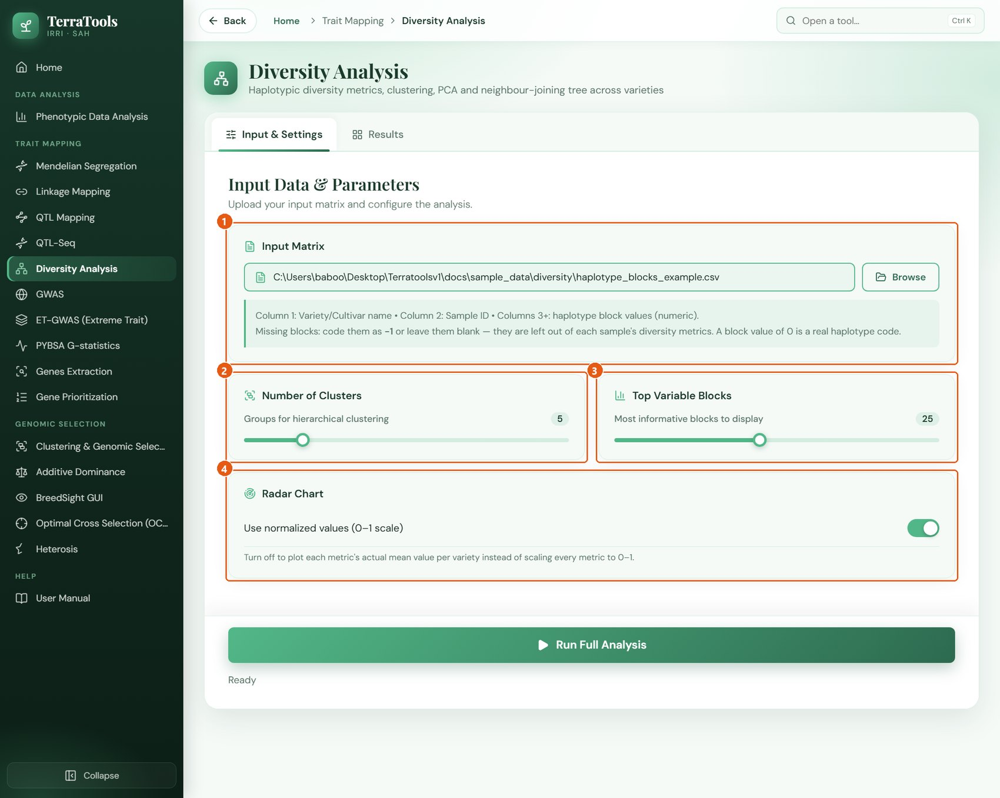
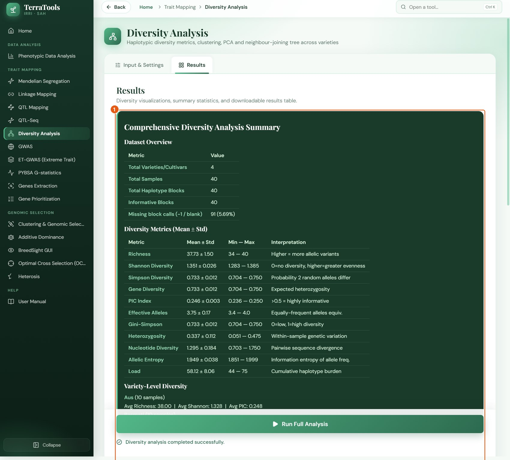
| Metric (per sample) | Meaning |
|---|---|
| Richness | Number of blocks with a call (higher = more allelic variants). |
| Shannon / Allelic entropy | Evenness of the haplotype codes: 0 = no diversity; higher = more, and more evenly spread. |
| Simpson / Gini-Simpson | Probability that two random block calls differ (0 – 1). |
| Heterozygosity, Gene diversity, PIC | Expected heterozygosity and polymorphism information content across the blocks. |
| Effective alleles | The number of equally frequent alleles that would give the same diversity. |
| Nucleotide diversity, Load | Pairwise divergence between the sample's block calls, and the cumulative haplotype burden. |
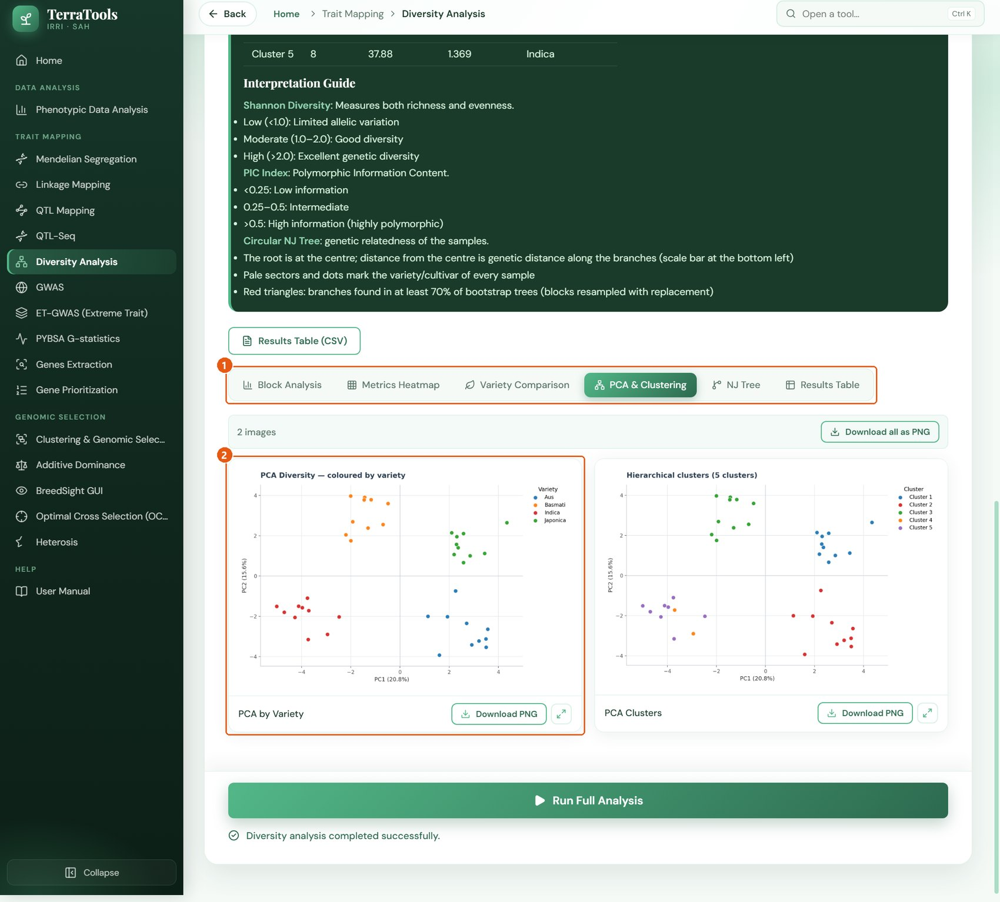
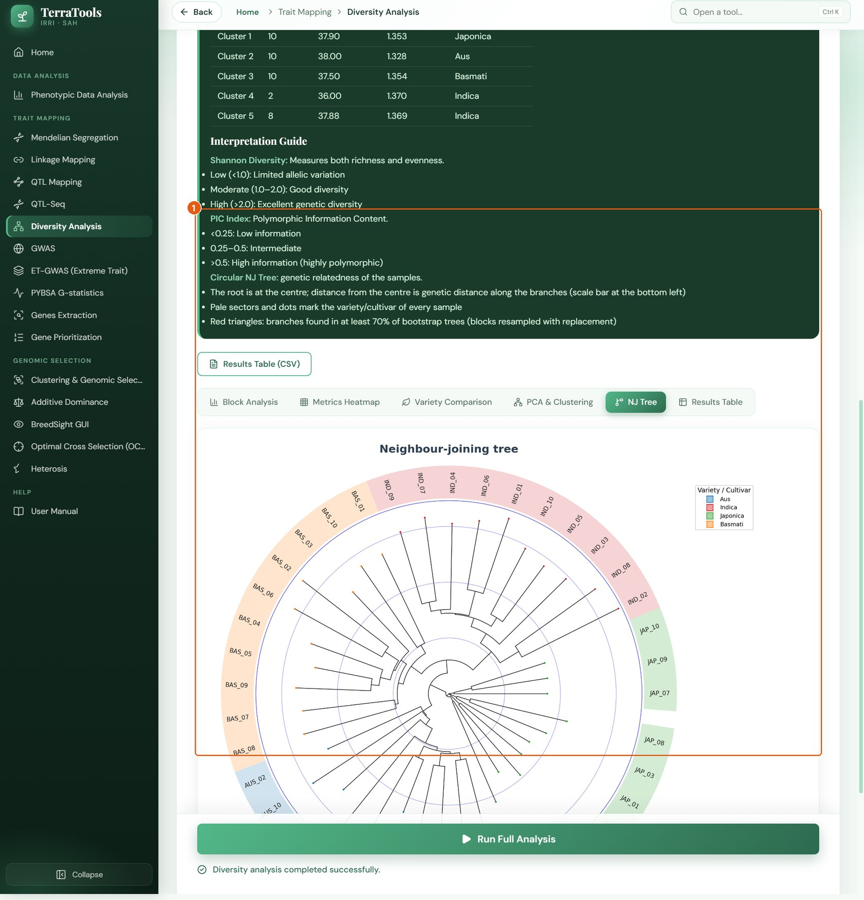
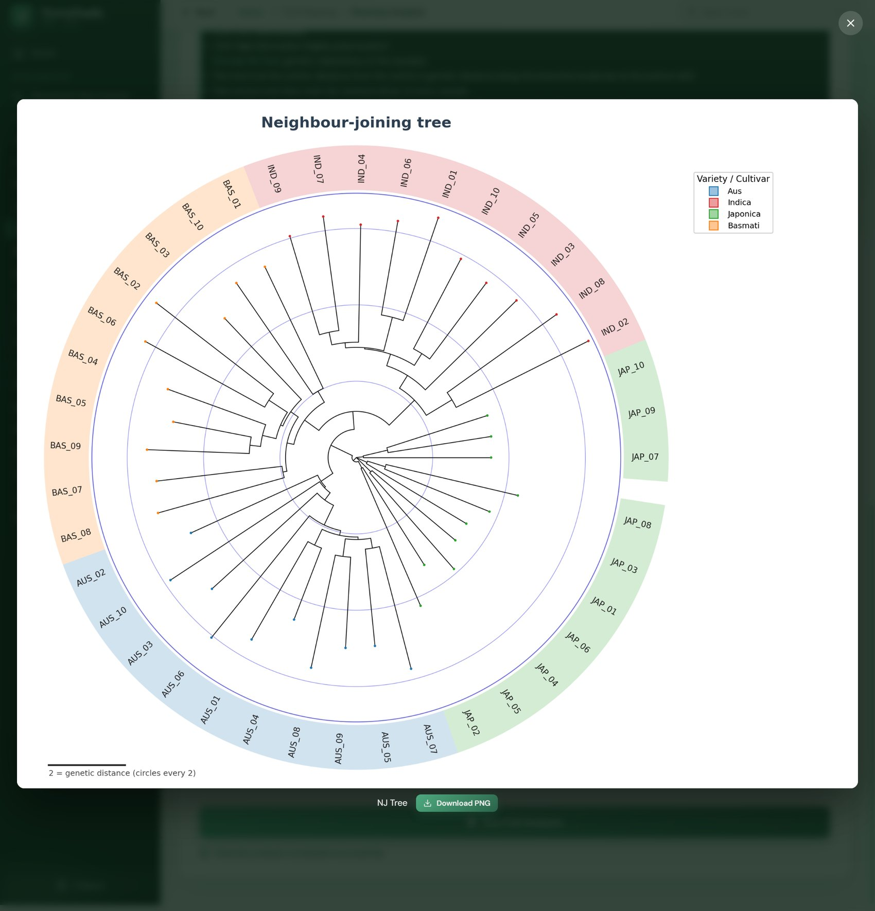
Genome-wide association study: tests every marker against a trait with up to eight models and reports the marker–trait associations (MTAs) that pass a stated significance criterion, together with the quality-control steps, diagnostics and limits of each model. You can use the built-in rice 3K panel and supply only phenotypes, or bring your own genotypes as a VCF or as a ready-made file.
| Genotype source | You provide | Use it when |
|---|---|---|
| Rice 3K panel — phenotype file only | a phenotype file with the 3K accession IDs | your lines are rice 3K accessions (the same panel as HapGUI: 3,024 accessions and 52,600 SNPs are built in) |
| My own genotypes — VCF + phenotype file | a VCF (.vcf / .vcf.gz) and a phenotype file | you have genotype calls for your own panel |
| My own genotypes — ready-made GWAS file | one file: ID, phenotype, SNP columns | you already prepared the exact GWAS input |
Prepare one phenotype file (CSV, TSV or Excel). The first column holds the accession ID as in the panel (for example B001) or the accession name (for example HEIBIAO); the other columns are traits.
Extra spaces, capital letters and punctuation do not matter (b 001 still matches), unmatched IDs are listed in the results, and repeated IDs are averaged.
SNPs with more than 20 % missing calls or a minor-allele frequency below the filter are dropped before the analysis, so the number of SNPs analysed depends on the accessions you supply.
Files that still use the older IRIS_313-… identifiers are recognised too.
rice3k_phenotype_example.csv| SampleID | Yield | Height |
|---|---|---|
| B005 | 4.97 | 125.6 |
| B014 | 5.97 | 116.4 |
| B027 | 5.8 | 90.9 |
| B063 | 5.14 | 94.1 |
| B076 | 4.98 | 115.9 |
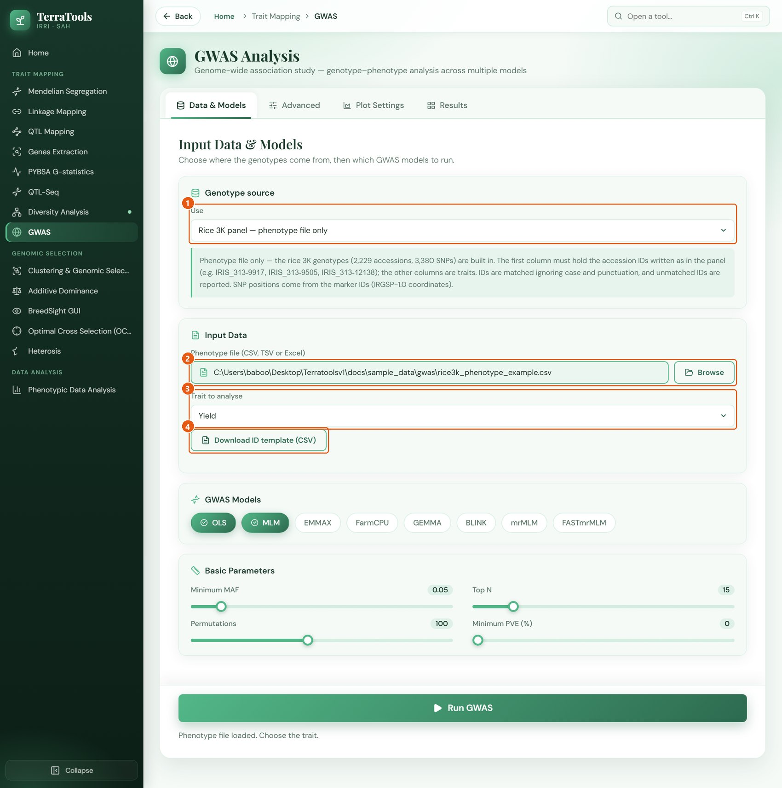
Behind the scenes TerraTools matches your IDs to the panel, keeps the accessions you have phenotypes for, and writes a GWAS-ready file (ID, phenotype, one column per SNP named like Chr5_27558337).
You can download that file from the Results tab and reuse it. SNP positions are derived from the marker IDs, which are positions along the 12 chromosomes laid end to end (IRGSP-1.0).
| #CHROM | POS | ID | REF | ALT | QUAL | FILTER | INFO | FORMAT | G001 | G002 | G003 | … |
|---|---|---|---|---|---|---|---|---|---|---|---|---|
| 1 | 1124393 | . | A | G | 50 | PASS | . | GT | 1/1 | 0/0 | 0/0 | … |
| 1 | 1843481 | . | A | G | 50 | PASS | . | GT | 1/1 | 1/1 | 1/1 | … |
| 1 | 2230647 | . | A | G | 50 | PASS | . | GT | 0/0 | 1/1 | 0/0 | … |
| 1 | 2235891 | . | A | G | 50 | PASS | . | GT | 0/0 | 0/0 | 0/0 | … |
| ID | Yield | Height |
|---|---|---|
| G001 | 1.533 | 118.1 |
| G002 | 4.021 | 110.8 |
| G003 | 3.554 | 112.6 |
| G004 | 2.16 | 98.7 |
1, 2, … or Chr1, Chr2, …); indels, multi-allelic sites and scaffolds are skipped and counted.0/0, 0|1, 1/1; phased or unphased). A call with a missing allele (./1) counts as missing. Haploid or polyploid calls, and alleles above 1, stop the run with the marker named; they are not converted. Samples that are pooled bulks (names such as high_bulk) are refused: a pool is not a diploid individual.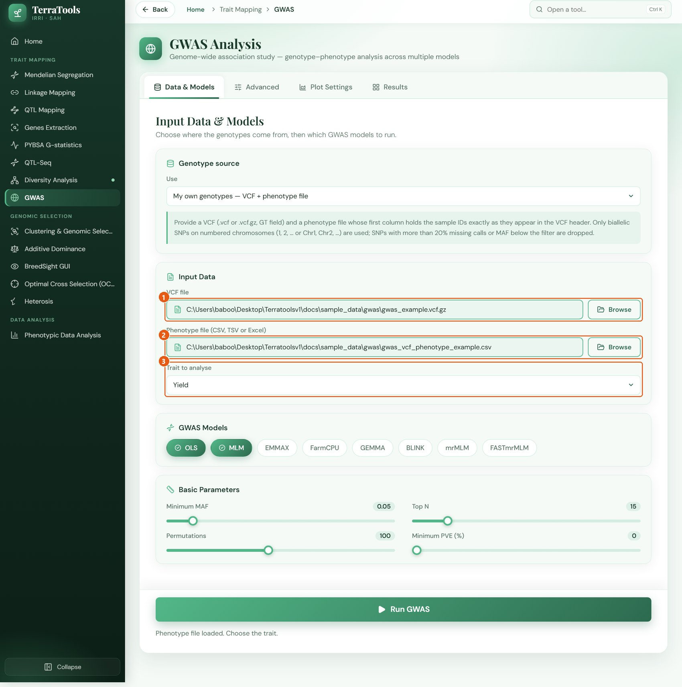
One CSV: ID, Phenotype, then one column per SNP named Chr<chromosome>_<position> with the genotype values (blank or NA for missing) in the coding you choose under Genotype coding.
−1 that stands next to values above 1 (0 / 1 / 2 files from Linkage Mapping, Mendelian Segregation or the Genofile Converter) can only be a missing call, since a centred −1 / 0 / 1 matrix has no 2, and it is read as missing; the number is written to the log.-9, -99, -999 and NA are read as missing; add other codes under Extra values to read as missing. Sample IDs, marker names, chromosomes and positions are kept as they are in the file.Second layout — marker positions in their own rows. The file Linkage Mapping writes for QTL mapping is accepted as it is: the header holds ID, the phenotype column and the marker names (any names); the next two rows hold the physical position of every marker in base pairs and the chromosome of every marker (blank ID and phenotype); then one row per individual. TerraTools takes chromosomes and positions from those rows, not from the marker names, so FarmCPU, BLINK, mrMLM and FASTmrMLM run on the real map. A label in the ID cell (Position, Chromosome) is honoured in either order; without labels the row with the larger numbers is the position row. Genotypes may use -1 for missing next to 0 / 1 / 2: because a −1/0/1 centred matrix cannot contain the value 2, −1 together with 2 can only be a missing code, and it is read as missing (this is stated in the log).
gwas_ready_example.csv| ID | Phenotype | Chr1_1124393 | Chr1_1843481 | Chr1_2230647 | Chr1_2235891 | … |
|---|---|---|---|---|---|---|
| G001 | 1.533 | 2.0 | 2.0 | 0.0 | 0.0 | … |
| G002 | 4.021 | 0.0 | 2.0 | 2.0 | 0.0 | … |
| G003 | 3.554 | 0.0 | 2.0 | 0.0 | 0.0 | … |
| G004 | 2.16 | 0.0 | 2.0 | 0.0 | 1.0 | … |
| G005 | 2.195 | 0.0 | 1.0 | 0.0 | 0.0 | … |
Example files: sample_data/gwas/gwas_example.vcf.gz, sample_data/gwas/gwas_ready_example.csv, sample_data/gwas/gwas_vcf_phenotype_example.csv, sample_data/gwas/rice3k_phenotype_example.csv
TerraTools expects genotypes that are already filtered (pruned for linkage, minor-allele frequency applied). It adds no further filtering: only markers without any variation, or without a valid chromosome and position, are dropped, and each missing call is filled with the mean dosage of its marker (not haplotype imputation: it ignores linkage disequilibrium and shrinks the variance of markers with many missing calls). Your genotype matrix itself is never edited. If fewer than 2 SNPs remain, the analysis stops with a message. The QC stage table is in the CSV and Excel report. The relationship matrix is VanRaden: K = ZZ′ / (2 Σ p(1−p)) with Z the genotypes centred by twice the allele frequency, computed from the observed calls before imputation. Under Advanced it can use LD-pruned markers or leave-one-chromosome-out matrices. If K is not positive semi-definite, negative eigenvalues are set to 0 and nothing else is changed. Principal components are taken from K and only used when you give a model a number of PCs (0 by default).
| Model | What it is |
|---|---|
| OLS | Marker-by-marker linear regression, optionally with PC covariates. With 0 PCs it is labelled uncorrected; with PCs, structure-corrected. It does not model relatedness. |
| MLM | y = Xβ + Zu + e, u ~ N(0, σ²ₐK), fitted by REML. The variance ratio is estimated once on the null model and the variance components are re-estimated for each marker; t test. The REML value is checked against a dense computation; the report says whether the check passed and whether the variance ratio reached the edge of its search range. |
| EMMAX | The same null model, with the variance ratio and the variance components fixed for all markers; a faster approximation. |
| GEMMA-style | The variance ratio is re-estimated for every marker (REML with a Wald test, or maximum likelihood with a likelihood-ratio test). It follows the same model as GEMMA but is not GEMMA: agreement with GEMMA is claimed only if you run the comparison (Advanced tab, needs the GEMMA program) and the numbers are within the stated tolerances. |
| FarmCPU, BLINK | Iterative multi-locus models, run by R packages that come with TerraTools: FarmCPU by rMVP and BLINK by GAPIT. TerraTools writes your genotypes, map and phenotype, calls the package with its own default settings (FarmCPU has one setting here, the number of iterations), and reads back each marker's p-value and effect. They use no kinship matrix, need physical marker positions (marker names such as Chr3_123456), and the packages give no standard error for BLINK. The percent variance explained is computed by TerraTools (marginal), because the packages do not return the markers they selected. |
| mrMLM, FASTmrMLM | Run by the mrMLM R package, which is installed in the R that comes with TerraTools: TerraTools writes your genotypes (as −1 / 0 / 1), phenotype and the structure PCs in the package's file formats, calls the package, and reads its tables back. Which markers are QTNs, their effects and their LOD are the package's own results, and nothing is recomputed. The settings are the package's search radius (kb), the critical LOD (default 3) and the number of structure PCs. The package gives a first-step p-value for every marker and no standard error; the QTN list is judged by LOD, so no p-value is derived from it. The percent variance explained shown is computed by TerraTools from the joint model of the QTNs. |
There is nothing to set. Every run reports Bonferroni (α = 0.05 over the markers tested) and Benjamini–Hochberg separately, and, for OLS, MLM, EMMAX and GEMMA-style, a threshold simulated under the model's own null fit (1000 replicates; the report gives its interval). Genome-wide significant follows Bonferroni. A marker with p ≤ 1/m that is not genome-wide is Suggestive. The 15 top-ranked markers of each model that pass nothing are listed separately as Exploratory and are never called significant. If no marker passes, the result says No genome-wide significant associations detected. Multi-locus models keep their own QTN criterion.
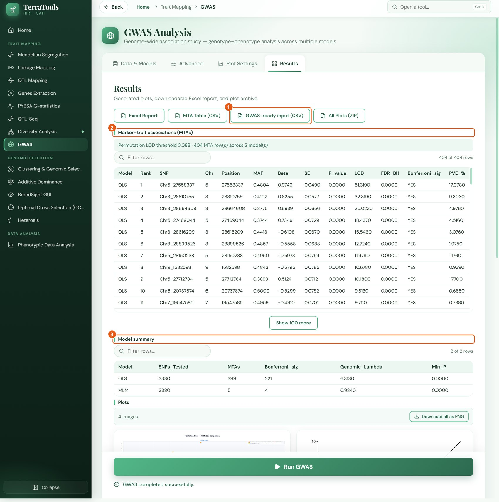
| Output | Meaning |
|---|---|
| Model summary | Per model: markers tested, genome-wide and suggestive counts, the three thresholds, λ, the smallest p, and a note when a model did not run. |
| Associations | One row per marker in three categories (genome-wide / QTN, suggestive, exploratory): model, SNP, chromosome, position, alleles, MAF, effect, SE, raw p, Bonferroni p, BH p, LOD, PVE and the criterion that applied. A multi-locus QTN keeps the LOD of its own model; no p-value is derived from that LOD. |
| Diagnostics | Per model: SNPs tested, invalid statistics, λ, smallest p, the p-value histogram, convergence and the REML check. λ is reported only. TerraTools does not call it good or bad and never rescales p-values with it (no genomic control). |
| Excel report | Summary, associations, QC stages, diagnostics, one sheet per model with every SNP, and a Notes sheet with the definitions. |
| MTA table (CSV), GWAS-ready input, All plots (ZIP) | The association rows, the file TerraTools built from your phenotypes, and the plots as PNG files. |
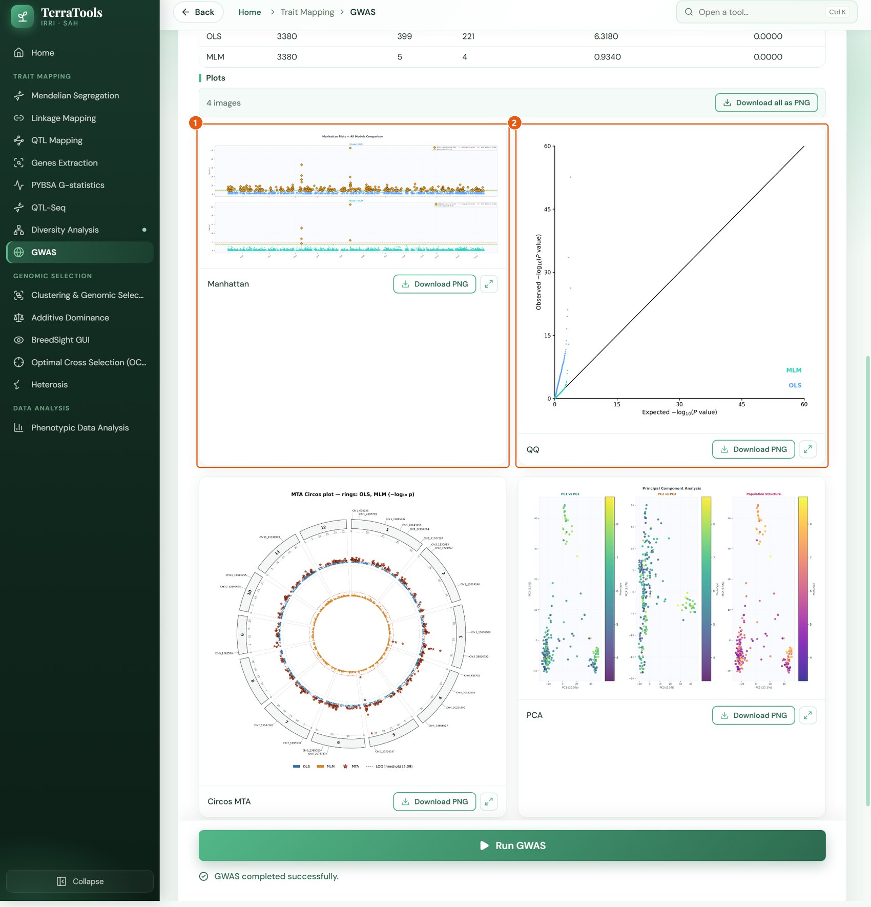
| Model | Definition (fraction of the phenotypic variance) |
|---|---|
| OLS | (RSS without the marker − RSS with it) / total sum of squares, covariates in both fits. |
| MLM, EMMAX, GEMMA-style | b²v / (b²v + σ²ₐ·mean(diag K) + σ²ₑ), b the marker effect, v its sample variance, the variances from the null REML fit. A marginal share relative to the variance model; it is not a joint estimate. |
| Multi-locus models | Conditional: what the marker adds to the joint linear model of all selected markers and covariates. |
Where an estimate cannot be defined (singular design, invalid statistic) it is shown as unavailable, not as 0. PVE from different models is not on a common basis and is not claimed to equal the value another program reports.
The figures are drawn with R (CMplot and base graphics). The Manhattan plot shows −log₁₀ p along the genome, one plot per model on its own scale, with the Bonferroni, suggestive and (when it was simulated) null-based lines; genome-wide hits are outlined and the names of the strongest ones, at most twelve, are written above the plot, with a strip of the marker density under the chromosomes. The QQ plot shows the p-value distribution of all models with λ, and the circos plot the genome-wide markers on a ring of chromosomes. Should R not be available, the program draws simpler built-in versions instead.
Bulk segregant analysis (BSA-seq) from variant tables. For every variant it compares the allele depths of two bulks with Fisher's exact test, smooths the G-statistic and the Δ(allele frequency) in sliding windows, and reports regions that exceed thresholds estimated by simulation.
Two tab- or comma-separated tables produced by GATK4 (VariantsToTable), one for the two parents and one for the two bulks. Each has the columns
CHROM, POS, REF, ALT, QUAL followed, for every sample, by <sample>.GT, <sample>.AD and <sample>.GQ. The parents file lists the two parents (first parent first),
the bulks file the two bulks; both must describe the same variants.
| CHROM | POS | REF | ALT | QUAL | HighBulk.GT | HighBulk.AD | HighBulk.GQ | … |
|---|---|---|---|---|---|---|---|---|
| 1 | 68858 | A | G | 50.0 | A/G | 16,16 | 59 | … |
| 1 | 152592 | A | G | 50.0 | A/G | 18,24 | 34 | … |
| 1 | 179172 | A | G | 50.0 | A/G | 20,26 | 40 | … |
| 1 | 340250 | A | G | 50.0 | A/G | 21,16 | 49 | … |
A GATK command that writes such a table from a joint VCF:
gatk VariantsToTable -V bulks.vcf.gz -F CHROM -F POS -F REF -F ALT -F QUAL -GF GT -GF AD -GF GQ -O bulks.tsv
QUAL and the allele-depth field (.AD) are required — without them the tool stops. The file extension must be .tsv (tab-separated) or .csv.Example files: sample_data/pybsaseq/bulks_example.tsv, sample_data/pybsaseq/parents_example.tsv
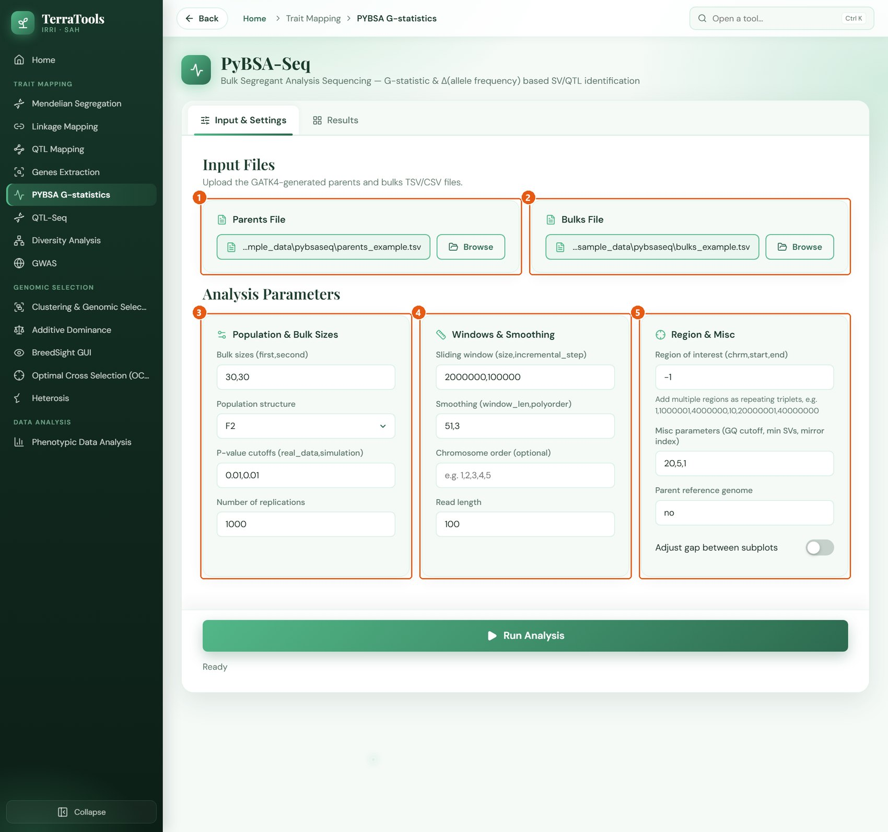
| Setting | What it does |
|---|---|
| Bulk sizes | Number of individuals in the first and in the second bulk, as first,second. |
| Population structure | F2, RIL or BC; used to simulate the expected allele-frequency spread. |
| P-value cutoffs | real_data,simulation significance levels for the observed data and for the simulated thresholds. |
| Number of replications | Simulation replicates for the thresholds (more is slower but smoother). |
| Sliding window | size,step in bp, e.g. 2000000,10000 = 2 Mb windows moved in 10 kb steps. |
| Smoothing | window_len,polyorder of the Savitzky–Golay curve drawn through the windows. |
| Region of interest | -1 = whole genome, or repeating triplets chrom,start,end. |
| Misc parameters | GQ cut-off, minimum variants per window and the mirror index of Δ(allele frequency). |
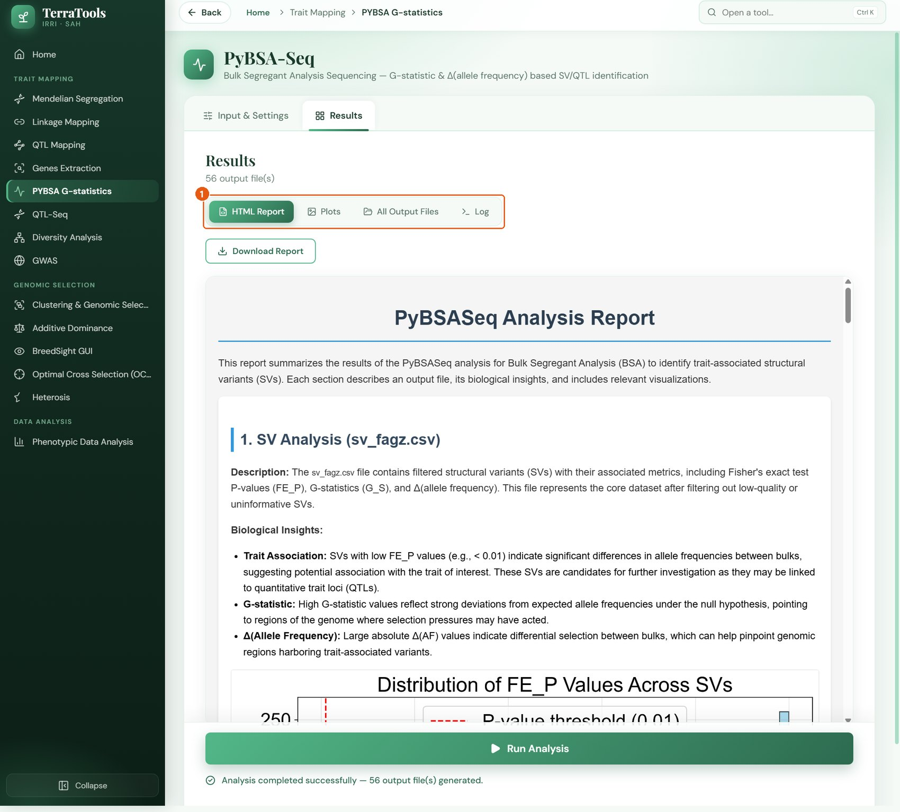
Takes the QTL found by QTL Mapping (with the marker position file or a VCF), finds the genes of a GFF3 annotation in them, and lists each gene with the details of the annotation (name, function) and, if you give the reference genome, its sequence. The result can be downloaded as a table, as a gene ID list and as a FASTA file.
1. QTL table — the qtl_significant_*.csv file of QTL Mapping (CSV, TSV or Excel), with its Left_Marker and Right_Marker columns. The columns are found by their name. A table of intervals already in base pairs (Chromosome, Start, End) and a table of single SNP positions, such as a GWAS result, are refused.
| QTL_ID | Chromosome | Left_Marker | Left_Position | Peak_Marker | Peak_Position | Right_Marker | Right_Position | CI_Start_cM | … |
|---|---|---|---|---|---|---|---|---|---|
| QTL_3.1 | 3 | M001 | 18.0 | M002 | 22.5 | M003 | 27.0 | 19.5 | … |
| QTL_5.1 | 5 | M004 | 40.0 | M005 | 44.0 | M006 | 49.0 | 41.5 | … |
| Marker | Chromosome | bp |
|---|---|---|
| M001 | chr03 | 3700000 |
| M002 | chr03 | 4250000 |
| M003 | chr03 | 4800000 |
| M004 | chr05 | 22000000 |
| M005 | chr05 | 22800000 |
| M006 | chr05 | 23600000 |
2. Marker position file (required) — the base-pair position of the markers: a table with Marker, Chromosome and bp columns (the names must be the same as Left_Marker / Right_Marker of the QTL table). The Physical Map sheet of a Linkage Mapping workbook works too. If you have no such file, choose Use a VCF and select a VCF: its CHROM and POS give the position and its ID column the marker name (a VCF without IDs cannot be matched). The file needs only the markers of the QTL. Marker positions come from the array manifest or the VCF of the markers, or from aligning the marker sequences to the genome.
3. Annotation (GFF3) — the genome annotation, plain or .gz. The genes are read from its gene lines.
4. Reference genome FASTA (optional) — plain .fa / .fasta, not zipped.
Chr01, chr1 and 1 are the same chromosome), but the FASTA and the GFF3 must be of the same genome version as the positions in the QTL results (and in the marker position file).Example files: sample_data/gene_extractor/annotation_example.gff3, sample_data/gene_extractor/marker_positions_example.csv, sample_data/gene_extractor/qtl_intervals_example.csv, sample_data/gene_extractor/qtl_table_example.csv
| Option | What it does |
|---|---|
| QTL interval | Confidence interval (default) places the support interval of the QTL on the genome; Left to right flanking marker takes the whole span between the flanking markers (wider, more genes). |
| A gene is taken when it lies | Completely inside the region (default): start and stop both within it. Overlapping also takes the genes cut by the border of the region. |
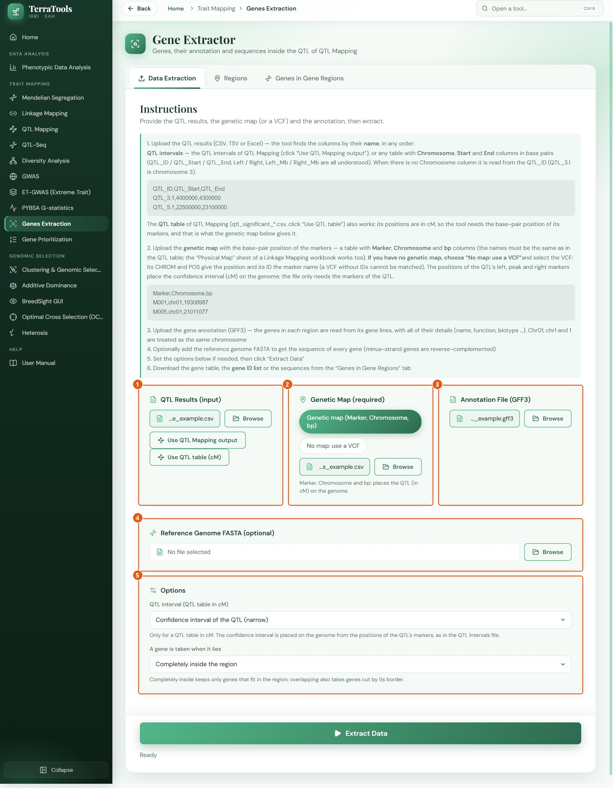
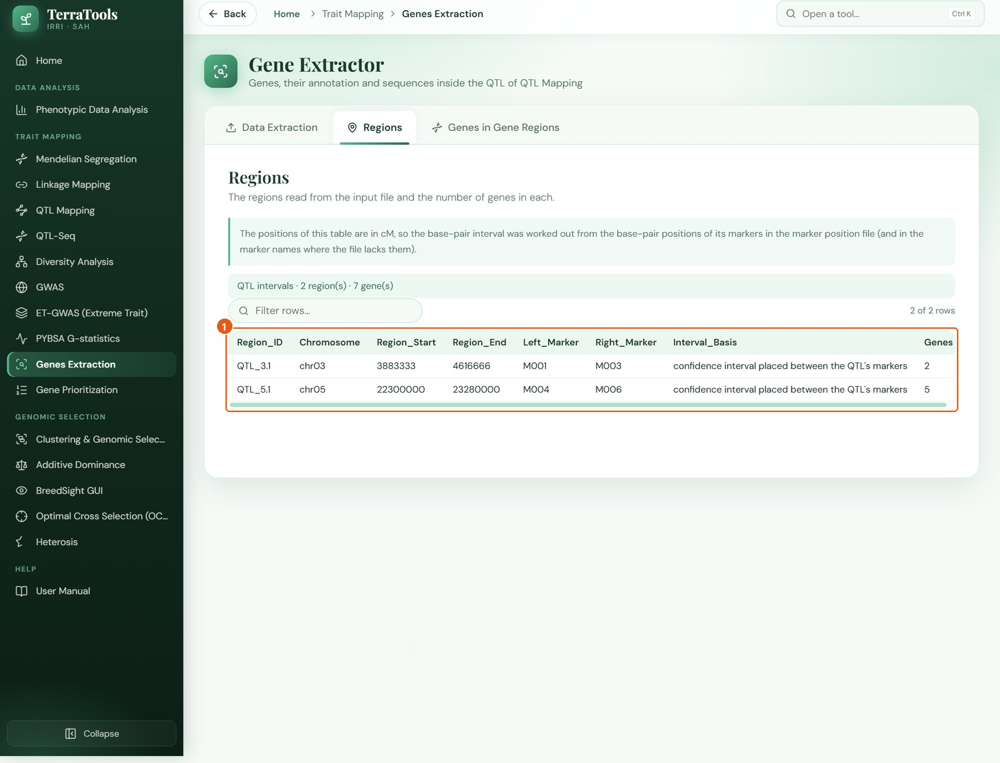
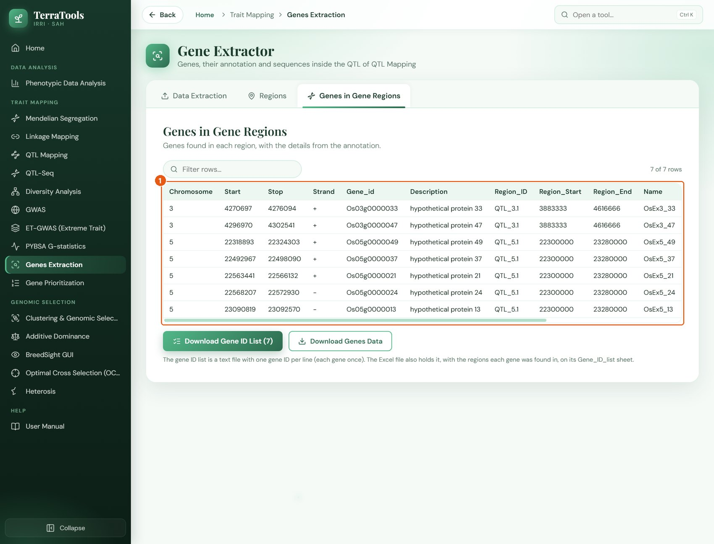
description or Note of the annotation — many GFF3 files have none), Region_ID, Region_Start, Region_End, then Name, Feature, Source, Length_bp and every other attribute of the GFF3 line (biotype …).Gene_ID_list.txt): one gene ID per line, every gene once, in genome order — ready to paste into an enrichment or ortholog tool. The Excel file has the same list on its Gene_ID_list sheet, with the regions each gene was found in, next to the Genes and Regions sheets.Ranks candidate genes for a trait. It reads what public databases know about each gene — a trait annotation, its function, the pathways it is in, its orthologs in other species, and the papers that name it together with the trait — turns that into a score from 0 to 100. Give it the gene list of the QTL (the Gene_ID_list.txt written by Genes Extraction). It needs an internet connection, unlike the other tools.
A gene ID list — paste IDs (one per line, or separated by commas, spaces or tabs) or choose a TXT / CSV / TSV / Excel file; the first column is read. For the genes of a QTL, use the Gene_ID_list.txt that Genes Extraction writes. Use the IDs of the Ensembl Plants / Gramene annotation: Os02g0766700 (rice, RAP-DB), TraesCS1A02G000100 (wheat), Zm00001eb000010 (maize). Gene symbols and UniProt accessions are also looked up. Rice MSU / LOC_Os IDs are translated to RAP-DB IDs only for the genes that Oryzabase lists; the others are reported as not matched, so export the RAP-DB IDs instead.
Example files: sample_data/gene_prioritization/candidate_genes_rice.txt
Each gene receives up to five evidence scores between 0 and 1, which are combined with fixed weights:
| Evidence | Weight | Where it comes from | What counts |
|---|---|---|---|
| Known gene–trait association | 30 % | Gramene (Trait Ontology annotation of the gene; QTL covering the gene counts less); Ensembl Plants phenotypes; for rice, the curated trait classes and Trait Ontology terms of Oryzabase | An annotation naming the trait or a related term. A direct trait term scores higher than a related one. |
| Functional relevance to the trait | 25 % | Gene description, GO terms and protein domains (Gramene, Ensembl Plants); for rice, the curated gene name of Oryzabase | Terms that match the trait words, weighted by the kind of GO evidence. |
| Pathway relevance | 20 % | Plant Reactome, Gramene | The gene is a member of a pathway whose name or summary matches the trait. |
| Ortholog evidence | 15 % | Ensembl Plants homology, Gramene gene tree | An ortholog (for example in Arabidopsis) that has a matching phenotype, description or trait term; one-to-one orthologs count more. |
| Literature support | 10 % | PubMed (NCBI E-utilities) | Papers in which the gene and the trait are named together. A title mention counts more than an abstract mention. This shows co-mention, not proof. |
The final score is S = [Σ (weight × evidence) ÷ Σ weight] × 100, summed over the categories for which data could be retrieved. A category that is unavailable (for example the PubMed search failed) is left out and the other weights are scaled up — it is not treated as zero evidence. A category that was retrieved but found nothing relevant scores 0. Each piece of evidence is counted once, in one category only.
The evidence level summarises the final score: Direct association (a gene-level annotation names the trait or a close term), Multiple lines (three or more categories with evidence), Two lines, Single line, No trait evidence.
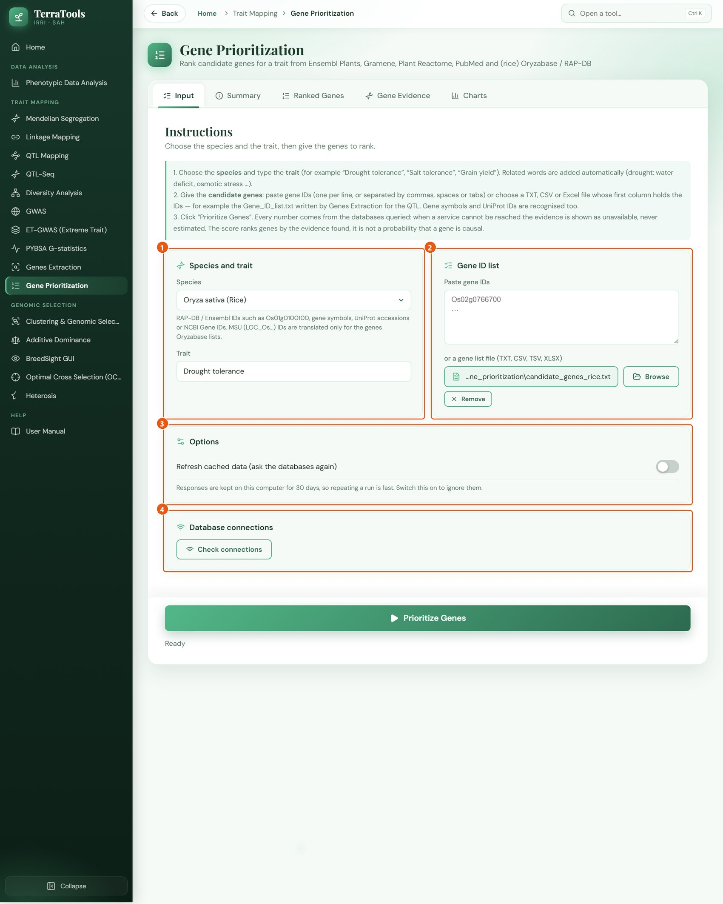
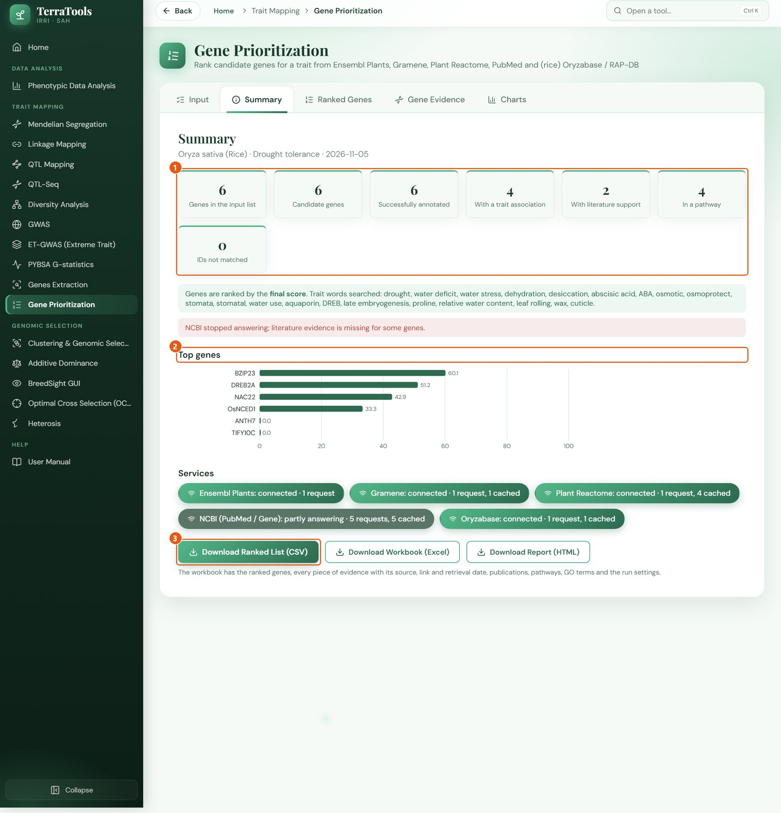
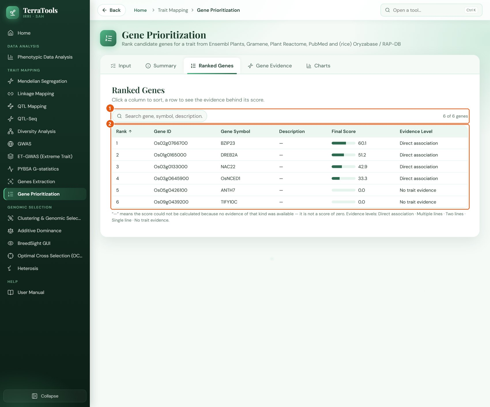
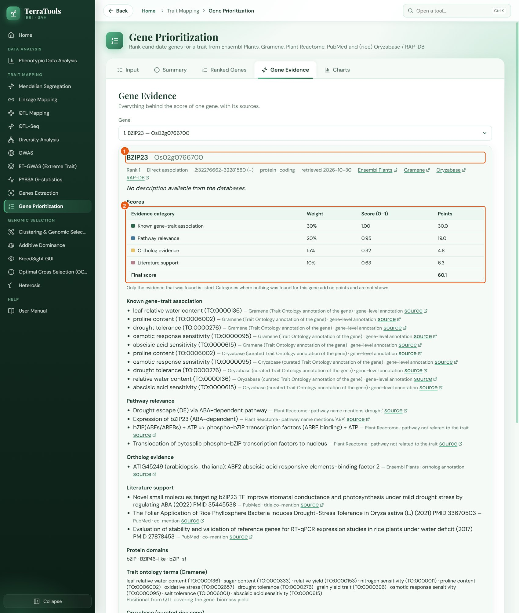
NCBI_API_KEY (and NCBI_EMAIL) before starting TerraTools.Groups genotypes with principal-component analysis and K-means, then splits them into training and testing sets so that every cluster is represented in both — the standard way to set up a fair genomic-selection experiment.
A CSV or TSV: the first column the sample ID, then one column per SNP (0 / 1 / 2). Missing values may be written as -1.
clustering_genotypes_example.csv| SampleID | SNP001 | SNP002 | SNP003 | SNP004 | SNP005 | SNP006 | SNP007 | … |
|---|---|---|---|---|---|---|---|---|
| Acc001 | 1 | 2 | 1 | 1 | 0 | 0 | 1 | … |
| Acc002 | 1 | 2 | 1 | 1 | 1 | 1 | 1 | … |
| Acc003 | 1 | 2 | 0 | 0 | 0 | 1 | 0 | … |
| Acc004 | 2 | 2 | 1 | 0 | 1 | 1 | 0 | … |
| Acc005 | 1 | 1 | 0 | 1 | 0 | 1 | 0 | … |
Example files: sample_data/clustering/clustering_genotypes_example.csv
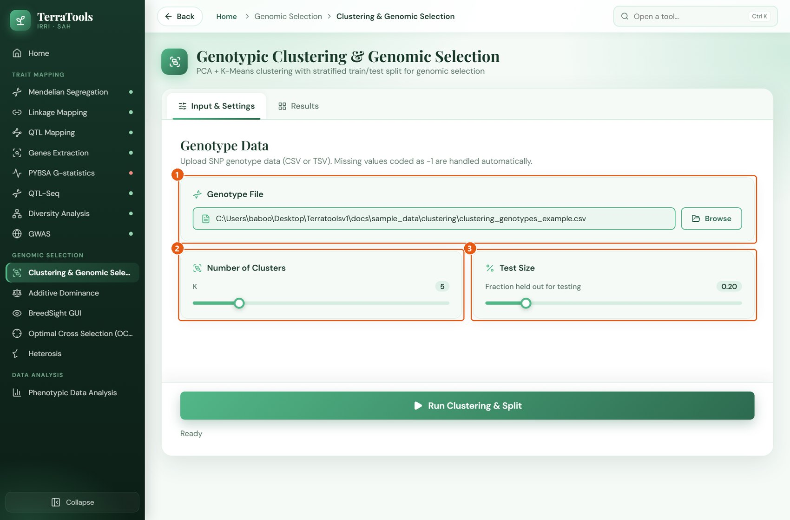
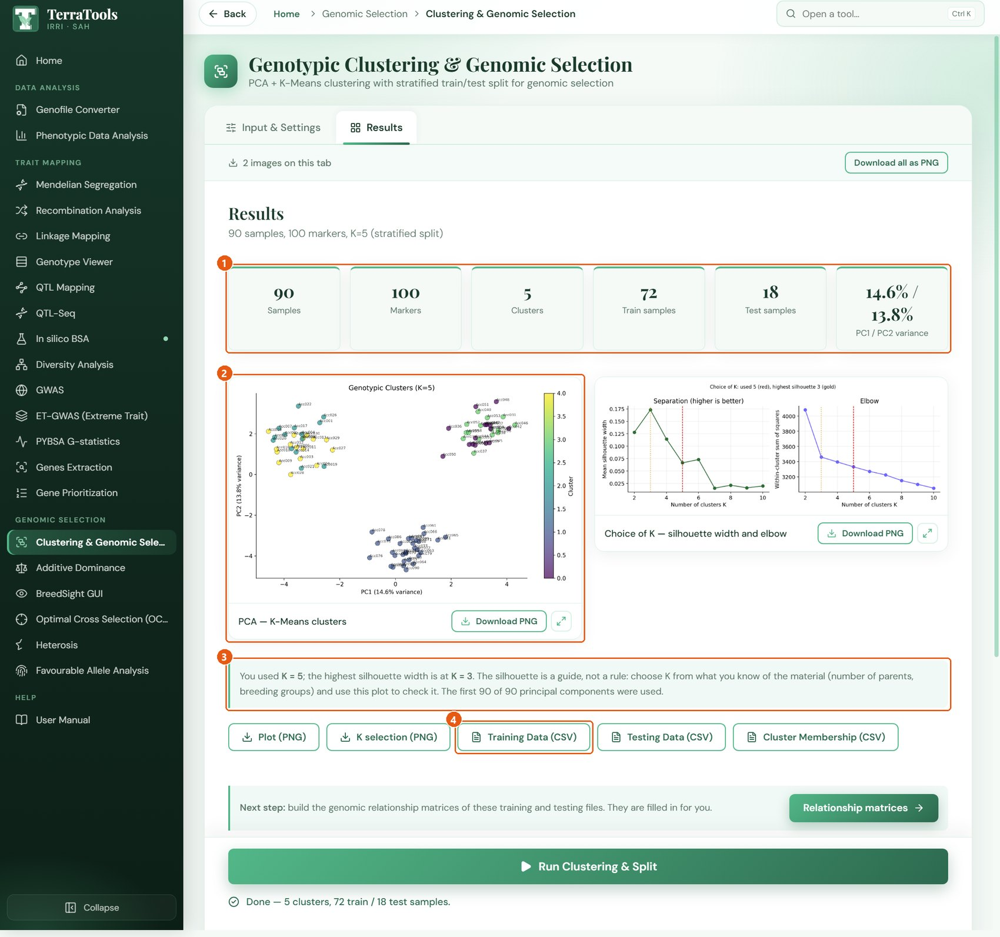
Builds genomic relationship matrices from SNP dosages: the additive matrix (VanRaden 2008, as rrBLUP A.mat) and the dominance matrix (Nishio & Satoh 2014, as sommer D.mat, for prediction, or Vitezica et al. 2013, orthogonal to the additive effects, for variance partition).
They are the building blocks of GBLUP and of kinship-aware selection.
One CSV or TSV: rows are samples, columns are SNP markers, the first column holds the sample ID. Markers are coded 0 (AA), 1 (Aa), 2 (aa). Blank cells are treated as missing.
snp_dosage_example.csv| SampleID | SNP001 | SNP002 | SNP003 | SNP004 | SNP005 | SNP006 | SNP007 | … |
|---|---|---|---|---|---|---|---|---|
| Line001 | 1 | 2 | 2 | 2 | 0 | 2 | 1 | … |
| Line002 | 0 | 0 | 0 | 2 | 0 | 0 | 0 | … |
| Line003 | 1 | 0 | 0 | 2 | 2 | 2 | 2 | … |
| Line004 | 1 | 1 | 0 | 2 | 2 | 1 | 2 | … |
| Line005 | 0 | 0 | 2 | 0 | 0 | 0 | 0 | … |
Example files: sample_data/additive_dominance/snp_dosage_example.csv
Genomic prediction with BreedSight, a hybrid of a deep neural network and a random forest, benchmarked against Lasso, GBLUP_1 and RRBLUP_1 with cross-validation. It tells you how well the genotypes predict the trait and predicts the breeding value of the test set.
Four CSV files. The sample IDs in a phenotype file and its genotype file must be the same.
sample_id, phenotypes.| sample_id | phenotypes |
|---|---|
| Line001 | 1.608 |
| Line002 | 1.806 |
| Line003 | 7.636 |
| Line004 | 1.7109999999999999 |
sample_id, then one column per SNP (0 / 1 / 2).| sample_id | SNP001 | SNP002 | SNP003 | SNP004 | SNP005 | SNP006 | … |
|---|---|---|---|---|---|---|---|
| Line001 | 0 | 2 | 2 | 2 | 2 | 0 | … |
| Line002 | 1 | 1 | 0 | 2 | 0 | 0 | … |
| Line003 | 1 | 2 | 2 | 2 | 2 | 0 | … |
| Line004 | 2 | 0 | 0 | 0 | 2 | 2 | … |
phenotypes column is optional for new, unphenotyped lines.| sample_id | phenotypes |
|---|---|
| Line321 | 4.157 |
| Line322 | 1.888 |
| Line323 | 4.508 |
| Line324 | 1.246 |
| sample_id | SNP001 | SNP002 | SNP003 | SNP004 | SNP005 | SNP006 | … |
|---|---|---|---|---|---|---|---|
| Line321 | 2 | 1 | 0 | 0 | 2 | 2 | … |
| Line322 | 0 | 0 | 2 | 2 | 2 | 0 | … |
| Line323 | 2 | 2 | 2 | 2 | 2 | 0 | … |
Example files: sample_data/genomic_prediction/test_genotypes_example.csv, sample_data/genomic_prediction/test_phenotypes_example.csv, sample_data/genomic_prediction/train_genotypes_example.csv, sample_data/genomic_prediction/train_phenotypes_example.csv
| Setting | Default | What it does |
|---|---|---|
| Number of CV folds / h² | 5 / 0.82 | Cross-validation folds; trait heritability (the ceiling for prediction accuracy is about √h²). |
| Epochs, batch size, learning rate | 300 / 32 / 0.001 | Training schedule of the neural network. Training stops early when the validation error stops improving. |
| DNN weight α | 0.40 | The ensemble prediction is α × DNN + (1 − α) × random forest. |
| L2 regularization, dropout | 0.001 / 0.20 | Guard against over-fitting. |
| RF trees / max depth | 300 / 0 | Size of the random forest (0 = unlimited depth). |
| PCA / RFE / raw genotypes | on / on / off | Feature engineering: PCA of the relationship matrix, recursive feature elimination, or the raw genotypes. With PCA the shared feature space has 50 components (RFE keeps 100). |
BreedSight itself uses a smaller network (two hidden layers of 64 and 32 units), standardises the trait before training, and feeds the first 20 PCA components to the network and the forest, while the forest also uses a minimum leaf size of 3 and a third of the features at each split. The comparison models (Lasso, GBLUP_1, RRBLUP_1) always use the shared 50-component feature space, so changing the BreedSight settings does not change their results.
Decides which parents to cross. From the marker data of your candidates it predicts the usefulness of every possible cross — how good the best progeny of the cross are expected to be — and finds the plan of crosses that gives the most while keeping diversity. It compares the plan with simply mating the best parents.
Three files. The relationship matrix between the candidates is calculated from the dosage matrix, so there is nothing else to upload.
Marker and Effect: the additive effect of every marker (for example from a genomic prediction model). The genomic value of each candidate is its dosage × these effects.Marker, Chromosome and cM. The distance between markers sets how much they recombine, and therefore how much the progeny of a cross can vary (the Haldane map function is applied). No map? Use a VCF instead: choose No map: use a VCF and give the VCF and a recombination rate (below).| Genotype | SNP001 | SNP002 | SNP003 | SNP004 | SNP005 | … |
|---|---|---|---|---|---|---|
| Line001 | 0 | 0 | 0 | 2 | 2 | … |
| Line002 | 0 | 0 | 2 | 2 | 2 | … |
| Line003 | 0 | 0 | 0 | 2 | 2 | … |
| Line004 | 0 | 2 | 2 | 2 | 2 | … |
| Marker | Effect |
|---|---|
| SNP001 | -0.1691 |
| SNP002 | 0.0 |
| SNP003 | -0.0 |
| SNP004 | -0.0 |
| Marker | Chromosome | cM |
|---|---|---|
| SNP001 | Chr1 | 1.94 |
| SNP002 | Chr1 | 3.77 |
| SNP003 | Chr1 | 6.04 |
| SNP004 | Chr1 | 7.07 |
A VCF has the position of every marker on the genome in base pairs (CHROM and POS), but the progeny variance needs positions in cM. Choose No map: use a VCF, select the VCF (plain or .gz) and enter the recombination rate in cM per Mb: each position is turned into cM as bp / 1,000,000 × rate. A marker is found in the VCF by its ID, or by CHROM_POS / CHROM:POS when the ID is empty, and must carry the same name as in the dosage matrix and the marker effects. The VCF is used only for the positions; the genotypes still come from the dosage matrix.
Example files: sample_data/cross_selection/dosage_matrix_example.csv, sample_data/cross_selection/genetic_map_example.csv, sample_data/cross_selection/marker_effects_example.csv, sample_data/cross_selection/markers_example.vcf
For every cross among the candidates the tool calculates, with the R package SimpleMating (Lehermeier et al. 2017), the mean of the progeny from the marker effects, its standard deviation from the effects and the recombination along the map, and the usefulness = mean + selection intensity × standard deviation. A cross of two average parents that differ at many large-effect markers can have a higher usefulness than a cross of two good parents that are alike.
A plan is a list of crosses, each parent used in at most max crosses per parent of them. A parent in n of the N crosses contributes x = n / 2N to the next generation. A plan is scored by
The penalty degree sets the balance: 0° maximises usefulness only, 90° minimises coancestry only. Usefulness and coancestry are rescaled to a common range and the plan with the highest cos(angle) × usefulness − sin(angle) × coancestry is searched by simulated annealing, which changes one parent of one cross at a time and keeps the plan valid (no selfing, no repeated cross, no parent over its limit). The search is repeated at 0°, 1°, 5°, 10° … 90° to draw the trade-off, and the longer search is made at your angle. The best angle is a choice: read the trade-off, then pick.
Trains a deep-learning model on a training population, predicts the genomic estimated breeding value (GEBV) of every possible hybrid between your parents, and screens them for mid-parent (MPH) and better-parent (BPH) heterosis.
Three CSV files, plus one optional:
| Sample | Yield |
|---|---|
| Train001 | 3.252 |
| Train002 | 3.995 |
| Train003 | 8.577 |
| Train004 | 2.6 |
| Sample | SNP001 | SNP002 | SNP003 | SNP004 | SNP005 | SNP006 | … |
|---|---|---|---|---|---|---|---|
| Train001 | 0 | 2 | 1 | 2 | 2 | 0 | … |
| Train002 | 0 | 0 | 0 | 2 | 2 | 2 | … |
| Train003 | 2 | 2 | 1 | 1 | 1 | 0 | … |
| Train004 | 0 | 2 | 1 | 0 | 1 | 2 | … |
| Sample | SNP001 | SNP002 | SNP003 | SNP004 | SNP005 | SNP006 | … |
|---|---|---|---|---|---|---|---|
| Parent01 | 2 | 0 | 0 | 0 | 2 | 2 | … |
| Parent02 | 2 | 2 | 2 | 2 | 2 | 2 | … |
| Parent03 | 0 | 2 | 0 | 2 | 2 | 0 | … |
| Parent04 | 2 | 0 | 0 | 2 | 2 | 0 | … |
The optional test genotype file has the same marker columns and gives predictions for extra lines.
Example files: sample_data/heterosis/parent_genotype_example.csv, sample_data/heterosis/test_genotype_example.csv, sample_data/heterosis/train_genotype_example.csv, sample_data/heterosis/train_phenotype_example.csv
Shows which favourable and unfavourable alleles of known trait genes each of your lines carries. You upload the genotypes of your lines (a rice 4K haplopanel file); TerraTools matches the marker IDs of your file with its own list of trait-gene markers — 327 SNPs and indels in 166 known trait genes for traits such as grain quality, yield, flowering, biotic and abiotic stress and nutrient use — and shows the alleles of your lines at the markers it finds. It is the genetic signature of a line: the list of trait alleles it has, that a breeder can use to choose parents and lines.
One genotype file of your lines: a CSV, TXT or tab-separated file (or a VCF, also gzipped) with one row per marker and one column per line; the first row holds the line names.
| Part of the file | What it must look like |
|---|---|
| Marker ID | chr1_7268879 (chromosome_position). The ID may be followed by the gene, chr1_7268879_LOC_Os01g13060. If the ID does not match, columns named chrom and pos are used (matched with the position of the trait-gene marker). The ID column need not be the first one; TerraTools finds it. |
| Genotypes | 0 = REF/REF, 1 = heterozygous, 2 = ALT/ALT, -1 (or empty, NA) = missing. VCF genotypes (0/0, 0/1, 1/1, ./.) and nucleotides (A/G, AG) are converted to these codes. |
| REF and ALT (optional) | Columns REF and ALT, or a VCF, are compared with the alleles of the trait-gene marker: if they are swapped the genotypes are flipped, and a marker whose alleles do not fit at all is left out and reported. |
Every trait-gene SNP has a reference allele (REF), an alternative allele (ALT) and a favourable and an unfavourable allele from the literature. For each line the call at the SNP gives one of four statuses:
| Status | Meaning |
|---|---|
| Favourable | The line is homozygous for the favourable allele. |
| Unfavourable | The line is homozygous for the other allele. |
| Heterozygous | The line carries both alleles. |
| Missing | No call for the line, or the favourable allele matches neither REF nor ALT. |
The favourable allele is compared with REF and ALT; when it matches only the reverse complement of one of them, the annotation is taken to be on the opposite strand and is flipped. A deletion, written -, counts as an allele like any other.
The gene window gives the trait, sub-category and position of the gene and the call of every selected line at each SNP, written as the two nucleotides (for example TG); the colour shows the status.
The Heatmap tab compares many genes and many lines in one figure. It is drawn by R (the script of the Heatmap_Final folder), on the genes and lines you choose from your file.
Typical workflows, troubleshooting, a glossary and a one-page summary of every input format.
| What you see | Likely cause and what to do |
|---|---|
| “Please select …” right after clicking Run | A required file or choice is missing. Check every file box and drop-down on the input tab. |
| Result tables are empty, or “0 matching samples” | The IDs in your files are not written identically (case, spaces, Chr3 vs 3). Open both files side by side and compare the first IDs. |
| “Phenotype column not found”, “Trait not found” | The phenotype file has a different header than you expect, or the trait column is not numeric. Re-select the file after fixing it. |
| QTL Mapping: “Only n matching samples” | The first column of the phenotype file and the first column of the genotype rows do not share IDs, or fewer than 8 do. |
| The window flickers (white flashes), stays blank or stops responding | Start TerraTools (safe graphics) from the Start menu. It uses software rendering and switches the decorative animations off, which avoids problems with graphics drivers, remote desktop sessions and virtual machines. TerraTools also switches to it by itself after two start-ups that did not end normally. A diagnostics log is written to %LOCALAPPDATA%\TerraTools\logs\diagnostics.log (window freezes, slow runs, the graphics mode in use); send it with a bug report. |
| Genofile Converter: every marker is left out, or almost none are coded | Parent 1 and Parent 2 are not the two parents (or are the same line): a marker is only coded when both parents are called, homozygous and carry different alleles. Pick the right samples; the Markers left out table gives the reason of every marker. |
| Linkage Mapping: a marker is missing from the map | Look at the QC Report: it lists every removed marker with the reason (too much missing data, monomorphic, distorted, chromosome 0). |
| Linkage map is far longer than expected | Markers are not in map order in the input file, or markers from different regions are on one chromosome. Fix the order and the chromosome column. |
| GWAS: “Only 0 of n phenotype IDs match” | For the 3K panel use the IDs from the Download ID template button. For a VCF use the sample names from the VCF header row. |
| GWAS with OLS finds hundreds of MTAs | OLS ignores population structure. Switch to MLM or a multi-locus model and compare the genomic inflation λ. |
| GWAS: “genotype coding is ambiguous” | The file holds only 0 and 1. Choose 0/1/2 dosage or −1/0/1 centred under Genotype coding; TerraTools does not guess. |
| GWAS: “Only n SNP(s) pass quality control” | Fewer than 2 variable markers with a valid chromosome and position were left. Check the genotype file and its coding. |
| QTL-Seq: “samtools was not found” | Reading BAM files is much faster with samtools (Linux / macOS, or WSL on Windows). Without it TerraTools uses pysam if it is installed, otherwise a slower built-in reader; for a whole genome start from a VCF or install samtools. |
| QTL-Seq: no QTL is reported | No window passed the limit of the chosen level. Check the number of plants per bulk and the population type (they set the limits), lower the level to 90 %, or check that the bulks were not swapped. |
| Gene Prioritization: “No internet connection …” or a service shown as not reachable | The tool asks Ensembl Plants, Gramene, Plant Reactome, NCBI and (rice) Oryzabase. Check the connection (a proxy or firewall can block them) and press Check connections. With only some services down the run still works and says which evidence is missing. |
| Gene Prioritization: IDs “not matched” | Use the IDs of the Ensembl Plants / Gramene annotation (rice RAP-DB Os02g0766700, wheat TraesCS…, maize Zm00001eb…). Rice MSU IDs (LOC_Os…) are translated only for the genes Oryzabase lists. |
| Gene Prioritization: most genes have a score of 0 or “—” | The databases hold little for those genes (no trait annotation, description or pathway). The score is then low or unavailable; it is not a judgement on the gene. |
| Genotype Viewer: “no markers on the chromosomes of this species” | The chromosome names or the species do not fit. Names such as 1, chr1 and chr01 are accepted; check that the species is the one the markers were called on, or add the species from its FASTA file. |
| Genotype Viewer: some markers are not drawn | They lie on chromosomes or scaffolds the species table does not have (the Results tab gives the number). This is normal for unplaced scaffolds. |
| Genotype Viewer: the VCF takes a long time | Every sample and every site is converted to a table first. Filter the VCF to the markers you need (for example with bcftools view -R) and keep biallelic sites only. |
| Genotype Viewer: the colours do not match the parents | The viewer only knows REF and ALT. Code the file so that parent 1 is A / 0|0 and parent 2 is B / 1|1, and name them in Legend names. |
| Favourable Allele Analysis: the page is blank | The dashboard is built into the program and needs no files. Close the tool page and open it again; if it stays blank, restart TerraTools. |
| In silico BSA: “At least 20 lines with a genotype and a trait value are needed”, or no line names match | The names in the first column of the phenotype file are not written exactly as in the genotype header (case, spaces, a prefix). The page shows how many names matched; fix them in one of the files. |
| In silico BSA: no significant region | Try a larger pool fraction, the 0.10 level or more permutations. The Closest to significant table lists the best regions of each window size; they are leads, not findings. Check that the population type is the right one: in a RIL or DH population Gw equals G1 and cannot find an over-dominant locus. |
| In silico BSA: the heterozygosity does not fit the population | The Please-note box compares the heterozygous calls with what the type should show (about 50 % for an F2 or a backcross, near 0 for RIL and DH). Choose the type that matches the generation you genotyped. |
| Clustering: the groups change with the number of components | With all components K-means uses the full genotype space. Limit it to the first 5 to 20 components and read the K-selection plot to check which K the data support. |
| BreedSight / Heterosis is very slow | They train neural networks. Lower the epochs and the folds for a trial run, and reduce the number of markers. |
| A plot looks empty or a table says “Not computed” | That analysis was not applicable to the data (for example dominance without heterozygous calls). The message on the page says which. |
| The page looks stuck | Look at the status line below the Run button — long analyses show their progress there. You can switch to another tool; a notification appears when the run ends. |
| macOS: “cannot be opened because the developer cannot be verified” | System Settings → Privacy & Security → Open Anyway (see Chapter 2). |
| Term | Meaning |
|---|---|
| BLUE | Best linear unbiased estimate: a genotype's mean after removing the effects of environment, rep and block. |
| cM (centiMorgan) | Unit of genetic distance; 1 cM ≈ 1 % recombination between two markers for short distances. TerraTools uses the Kosambi mapping function. |
| Δ(SNP-index) | Difference in the share of reads carrying the other parent's allele between two bulks; around zero where no QTL is near. |
| Favourable / unfavourable allele | Favourable Allele Analysis: the allele of a trait gene that improves the trait (from the literature), and the opposite allele. A variety is favourable at a SNP when it is homozygous for the favourable allele. |
| F2 / RIL | F2: second filial generation (1 : 2 : 1 genotypes). RIL: recombinant inbred line (mostly homozygous, 1 : 1). |
| Evidence level | Gene Prioritization: Direct association, Multiple lines, Two lines, Single line or No trait evidence, from how many evidence categories support the gene. |
| Final score | Gene Prioritization: the final score (0–100) weighs what the databases know about a gene and the trait. It is not the probability that the gene is causal. |
| GEBV | Genomic estimated breeding value: a line's predicted genetic value from its markers. |
| G statistic, Gw (In silico BSA) | G is the log likelihood ratio of a table of counts. G1 is that of the pool × allele table, G2 that of the pool × genotype table, and Gw is their weighted mean, so it also sees loci where the heterozygotes, not the alleles, differ between the pools. |
| GenoSee | The graphical-genotype program (Hashimoto 2024, MIT licence) on which the Genotype Viewer is based. |
| Heritability (H²) | Share of the phenotypic variance that is genetic. |
| In silico pool | In silico BSA: the lowest or the highest fraction of the lines by trait value, used as a bulk without any pooled sequencing. |
| Kinship | Genetic relatedness of two lines; 0 = unrelated, 1 = identical. |
| LOD | Logarithm of odds. In QTL Mapping the likelihood-ratio LOD of a marker; in GWAS the 1-df χ² statistic divided by 2 ln 10. Higher = stronger evidence. |
| Lambda (λ) | Genomic inflation factor of a GWAS: about 1 when p-values are well calibrated. |
| MAF | Minor-allele frequency: the frequency of the rarer allele at a marker. |
| MPH / BPH | Mid-parent / better-parent heterosis: how far a hybrid exceeds the parents' mean / the better parent, in percent. |
| MTA | Marker–trait association: a marker that passes the significance threshold in GWAS. |
| Permutation threshold | A significance level obtained by shuffling the phenotype many times, repeating the analysis on each shuffled phenotype and taking the 95th percentile of the highest genome-wide statistic. |
| PVE | Percent of the phenotypic variance explained by a marker or QTL. |
| QTL | Quantitative trait locus: a genome region that influences a quantitative trait. |
| SNP-index | Share of a bulk's reads that carry the allele of the non-baseline parent. |
| Segregation distortion | A marker whose genotype ratio departs from Mendel's expectation. |
| Tool | Files | Layout of the first rows / columns | Example file |
|---|---|---|---|
| Genofile Converter | 1 HapMap, VCF / VCF.GZ or raw Excel / CSV | HapMap: rs#, alleles, chrom, pos … then samples; VCF: #CHROM … FORMAT then samples (GT); raw: Marker, Chromosome, P1, P2, offspring (A:G …); the two parents are named in the tool | genofile/* |
| Phenotypic Data Analysis | 1 CSV/Excel | Columns by name: Genotype, Environment, Rep, Block (not for an RCBD); every other numeric column is a trait | phenotypic/* |
| Mendelian Segregation | 1 CSV | Marker, Chromosome, one column per individual (0/1/2); the QTL Mapping layout is also accepted | mendelian/mendelian_RIL_example.csv |
| Recombination Analysis | 1 CSV / Excel | One row per marker: CHROM, POS (bp), ID, then one column per sample (the recurrent parent may be one of them), coded 0/1/2/−1 · or the coded table of the Genofile Converter with positions in the marker names (chr01_1044946) | recombination/mapping_population_example.csv |
| Linkage Mapping | 1 Excel or CSV | Marker, Chromosome, one column per individual (0/1/2/−1) — made by the Genofile Converter from company files | linkage/linkage_F2_coded_example.xlsx |
| Genotype Viewer | 1 CSV or VCF | By position: chromosome, marker, position (bp), then one column per sample (A/H/B/N, 0|1 or 0/1); or a VCF / VCF.GZ | genotype_viewer/* |
| QTL Mapping | 2 CSV | Genotype: 3 header rows (marker, chromosome, cM) then one row per individual; Phenotype: ID, traits | qtl/qtl_genotypes_example.csv, qtl_phenotypes_example.csv |
| QTL-Seq | 2 BAM + FASTA, or 2 VCF | Bulk VCFs with GT:AD per sample (a parental VCF is optional) | qtl_seq/qtlseq_example.vcf.gz |
| Diversity Analysis | 1 CSV | Variety, Sample ID, haplotype block codes (−1 = missing) | diversity/haplotype_blocks_example.csv |
| GWAS | phenotype + (3K | VCF | ready file) | Phenotype: ID, traits · ready file: ID, Phenotype, Chr1_12345 … | gwas/* |
| In silico BSA | 2 CSV / Excel | Genotypes: CHROM, POS, ID, then one column per line (0/1/2, −1 missing) · phenotypes: line name, traits (or a GWAS-ready file with the trait column) · optional GFF3 / GTF for candidate genes | insilico_bsa/* |
| PYBSA G-statistics | 2 tables (TSV/CSV) | CHROM, POS, REF, ALT, then <sample>.GT / .AD / .GQ | pybsaseq/parents_example.tsv, bulks_example.tsv |
| Genes Extraction | CSV / Excel + GFF3 | QTL table of QTL Mapping (cM) · marker position file (Marker, Chromosome, bp) or a VCF (required) · GFF3 annotation · optional FASTA | gene_extractor/* |
| Gene Prioritization | Gene IDs | Gene IDs (TXT / CSV / Excel, first column, or pasted; the Gene_ID_list.txt of Genes Extraction) · internet connection | gene_prioritization/* |
| Clustering & Genomic Selection | 1 CSV/TSV | SampleID, SNP columns (0/1/2, −1 missing) | clustering/clustering_genotypes_example.csv |
| Additive Dominance | 1 CSV/TSV | SampleID, SNP columns (0/1/2, blank missing) | additive_dominance/snp_dosage_example.csv |
| BreedSight GUI | 4 CSV | sample_id + phenotypes · sample_id + SNPs (no missing), for train and test | genomic_prediction/* |
| Optimal Cross Selection | 3 files | Allele dosage matrix (genotypes × markers, 0/1/2) · Marker, Effect · Marker, Chromosome, cM — or a VCF and a recombination rate | cross_selection/* |
| Heterosis | 3–4 CSV | pheno: ID, trait · genotypes: ID, marker columns (same columns, same row order) | heterosis/* |
| Favourable Allele Analysis | 1 file | Rice 4K haplopanel genotypes: marker IDs (chr1_7268879) × lines, codes 0 / 1 / 2 / -1 — or a VCF | favourable_allele/* |